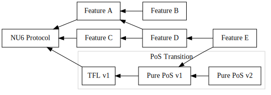

A Trailing Finality Layer for Zcash
This book introduces and specifies a Trailing Finality Layer for the Zcash network. This is version 0.1.0 of the book.
This design augments the existing Zcash Proof-of-Work (PoW) network with a new consensus layer which provides trailing finality. This layer enables transactions included via PoW to become final which assures that they cannot be reverted by the protocol. This enables safer and simpler wallets and other infrastructure, and aids trust-minimized cross-chain bridges. This consensus layer uses Proof-of-Stake consensus, and enables ZEC holders to earn protocol rewards for contributing to the security of the Zcash network. By integrating a PoS layer with the current PoW Zcash protocol, this design specifies a hybrid consensus protocol dubbed PoW+TFL.
The rest of this introductory chapter is aimed at a general audience interested in the context of this proposal within Zcash development, status and next steps, motivations, a primer on finality, and tips to get involved.
A Path to Proof-of-Stake Zcash
The TFL design provides a possible first step in transitioning Zcash to a PoS protocol. Here we describe how a transition to PoS relates to "the Zcash roadmap" and how TFL fits into one approach to a PoS transition.
The Zcash Tech-Tree
There are multiple developer orgs working on different proposed features for Zcash. Some of these involve multiple large distinct upgrade steps, and several of these steps depend on other such steps. This could be represented as a directed acyclic graph. We have begun referring to this space of possible future improvements as the Zcash Tech-Tree, taking inspiration from an analogous concept in gaming.1
We envision a proof-of-stake transition path as one of the potential paths within this tech-tree which is the primary protocol focus of this proposal. An example visualization of this Zcash Tech-Tree might look like this:
A Proof-of-Stake Transition Path
Given that context, we envision a path within the Zcash Tech-Tree for transitioning Zcash to PoS. At the top level we propose that this path contain at least two major milestones:
- Transitioning from current Zcash NU5 PoW protocol to a PoW/PoS hybrid consensus protocol dubbed PoW+TFL.
- Transitioning from PoW+TFL to pure PoS protocol.
After this transition to pure PoS, there are likely to be future improvements to the PoS protocol, or the consensus protocol more generally. This TFL book focuses almost exclusively on the first step in this sequence.
Our primary motivation for proposing (at least) two steps is to minimize disruption to usability, safety, security, and the ecosystem during each step.
This book primarily focuses this first step: the transition to PoW+TFL. To understand the specific goals for that, see Design Goals.
With this approach, the Zcash Tech Tree with the TFL approach might look something like this:

Why Two Steps?
One question we've gotten in proposing this approach is why take a two-step process with an intermediate hybrid consensus protocol, rather than a single transition directly to a PoS protocol?
Here's how we think about those trade-offs:
Considering Single Transition (vs Hybrid Multi-Step)
Pros
- We already understand the current PoW protocol well, and if we transition to an existing proven PoS protocol, then we could skip the complexity of an intermediate hybrid stage.
- The node implementation might be simpler.
- Explaining to people what is happening might be simpler. Something like “Zcash has been PoW since it launched, but on DATE (e.g. at block height X) it will switch to PoS.”
- Given that the issuance in a given time period is bounded by the supply curve, the full amount that was previously allocated to mining rewards becomes immediately available for staking rewards at the switch-over, rather than having to share this amount between mining and staking during the hybrid stage.
Cons
- If there is any unforeseen show-stopping problem in the new protocol or the transition process, we’d have to react to a network-wide issue.
- It may be more likely to cause ecosystem disruption; unforeseen differences between PoW and PoS might cause various kinds of snags or papercuts throughout the ecosystem, and these would all pop up around the same time, which may lead to a loss of confidence/retention/adoption or at the very least inconvenience many users for some time.
- Losing miners: since the transition would be all at once, we may lose some number of miners, who are participants and users in the ecosystem. Miners may leave prior to the transition in order to take care of their own needs. If there is some show-stopper in the transition, one possible short-term mitigation would be to fall back on PoW which is well known, but if we’ve lost most miners, that may no longer be viable.
Considering Hybrid Multi-Step approach (vs Single-Step):
Note: TFL is one instance of a multi-step approach.
Pros
- We can hopefully be less disruptive across the ecosystem so that there are fewer snags and disruptions with each step.
- If there is a show-stopping flaw in any step, the fall-back possibility seems more plausible. For example, if there is a show-stopper when transitioning from PoW to PoW+TFL, falling back to pure PoW seems more feasible, since both protocols rely on mainnet PoW infrastructure, so those participants will be present in either case.
- Retaining miners during a hybrid phase: while it is true that a hybrid protocol will lower miner revenue (since we aim to maintain the issuance schedule constraints), there is also more possibility and likelihood of keeping some of these users engaged. For example, they may begin participating in staking services (either as delegators or as infrastructure operators). If that is successful, then they’re also more likely to remain engaged in the subsequent transition to pure PoS.
- This general approach was demonstrated successfully by Ethereum, which is the largest or second largest cryptocurrency network for several important metrics (e.g. market cap, fees paid, user and developer activity, …). So we know this can be done well without disruptions.
Cons
- The intermediate hybrid step will be a more novel and less well understood protocol. (It will necessarily be fairly different from Ethereum’s Beacon chain era.)
- Consensus nodes will be more complex, involving logic for both sub-protocols as well as their integration. (Ideally this complexity can be modularized so that the nodes are easier to maintain and improve.)
- This may be more complicated to explain to current and potential new users. Something like “Zcash launched as PoW, and on DATE (block height X) it will transition to a hybrid system, then later to a pure PoS system.”
- The available issuance must be shared between mining and staking rewards during the hybrid stage. The security of the PoW layer and of the PoS layer during this stage is partially dependent on the funds allocated to issuance for each protocol, and it is not yet clear to what extent splitting rewards would affect overall security.
Footnotes
See Wikipedia's Technology Tree - History section for details.
Trailing Finality Layer in a Nutshell
The hybrid PoW/PoS protocol proposed in this book is similar to today's Zcash NU5 protocol with the addition of a Trailing Finality Layer:
TODO: Add network topology / software subcomponent diagram #124
The Zcash Trailing Finality Layer refers to a new subprotocol of a new hybrid PoW/PoS protocol, which we refer to as PoW+TFL. This subprotocol introduces assured finality for the Zcash blockchain, ensuring that final blocks (and the transactions within them) may never be rolled back.
We use the term "layer" because we can understand this design as introducing a new layer to the Zcash network, making only minimal changes to the existing network and consensus protocol. This modular separation is present in the consensus rules, the network protocol, and the code architecture.
Why Should Users Care?
There are three categories of users this proposed TFL protocol would impact:
Current ZEC Users
Existing ZEC users who are primarily concerned with storing or receiving ZEC, whether private or transparent may benefit from this change in the short or medium term, because it may help lower delay times for some services, such as exchange deposits. As exchanges come to rely on the new finality guarantee, they can often reduce their deposit wait times. Other services with similar confirmation-depth-based wait times can be improved in a similar way to lower these wait times. Other than this improvement, these users should notice no other changes.
In the longer term, providing finality will be useful in establishing trust-minimized bridges to other blockchains. We anticipate this can enable better connecting ZEC to the Defi ecosystem, and with the introduction of Zcash Shielded Assets, this can enable other assets to connect to the Zcash shielded pool.
Proof-of-Stake Users
Users who are interested in providing finality infrastructure, or users who want to delegate ZEC towards finality, will be able to earn rewards from the protocol for doing so, while also taking on some risk to their funds (to prevent malicious abuse of the protocol). This may be an important new category of ZEC users and use cases.
Miners
Miners who provide Proof-of-Work security will necessarily see some reduction in their block rewards, since this proposal maintains the same issuance schedule and supply cap of ZEC while also spending some rewards on finality.
Important Note: The proportion and details of how much mining rewards will be impacted, and conversely how much finality/PoS providers will earn, are not yet specified in this proposal.
Why is this a Good Approach to a PoS Transition?
This design is appealing as a safer first step in transitioning the Zcash protocol for multiple reasons:
It Enables Proof-of-Stake Mechanisms Conservatively
This transition would enable PoS mechanisms, including the ability to operate PoS infratructure and delegate ZEC towards those providers to earn protocol rewards. While all PoS transitions would accomplish this, this approach does so in a conservative manner: it introduces these mechanics while striving to minimize the impact on existing use cases and protocol security.
In a sense, we can think of this approach as enabling the Zcash community to "dip our toes in the PoS waters" rather than diving in. If the results pan out well, it gives us confidence for further transitions. If we discover challenges, flaws, or risks, we anticipate their impact will be more limited since this is a more cautious transition step.
Minimal Use-Case Disruption
In many cases, existing products, services, and tools can continue using the mainnet chain with no changes to code assuming they rely on existing consensus nodes. We view this as a major benefit which allows Zcash's existing user network effect to continue safely unperturbed.
There will be certain narrow exceptional areas if those products, services, or tools need to be precise in areas where the protocol has changed, such as mining/staking reward calculations, transaction formats (in particular any new PoS-related fields or logic), or chain rollback logic.
Modular Design
By conceptualizing the TFL as a distinct "layer" or subprotocol, the consensus rules can be described in terms of two consensus subprotocols, one embodying most of the current consensus logic of Zcash and another the TFL. These protocols interact through a hybrid construction. See Design at a Glance to learn more about these distinct subprotocols.
Reasoning about the whole protocol can leverage analysis and understanding of each subprotocol and the hybrid construction somewhat independently due to this modular design. Note that although this design is modular, the hybrid construction may require modifications to the [PoW] and/or [PoS] subprotocols to protect safety and liveness properties. Nevertheless, the modularity still improves analysis and reasoning compared to a monolithic design.
Finally, since one subprotocol is very similar to the existing Zcash NU5 protocol, this lessens risk that the consensus properties within that subprotocol compromise current NU5 properties.
Modular Implementation
In addition to the other benefits of protocol design modularity, we anticipate actual implementations can realize this modularity in code. This can help makes implementations more robust, easier to maintain, and more interoperable.
For example, we can envision a standardized interface between PoW & TFL consensus components, enabling different development teams to provide these different components and for "full node" packagers to mix and match them. This is somewhat reminiscent of Ethereum's execution/consensus layer separation which we believe has shown great success in implementation team and product diversity.
Cracking the Nutshell
In the rest of the introductory section of this book, we describe the status and next steps for the TFL proposal, provide a motivation for finality, and suggestions for getting involved.
Status and Next Steps
This is an early and incomplete protocol design proposal. It has not been well vetted for feasibility and safety. It has not had broad review from the Zcash community, so its status on any Zcash roadmap is undetermined.
Current Components
This Book
This book is intended to become both a high-level overview and introduction to TFL, and a full specification.
Crosslink
The current heart of the design work is an in-progress hybrid consensus protocol construction called Crosslink (definition). This is defined in the Crosslink chapter.
simtfl
We've begun creating a simulator called simtfl which we will use to model security and abstract performance concerns. Its development is tracked at https://github.com/zcash/simtfl.
Major Missing Components
- PoS subprotocol selection,
- Issuance and supply mechanics, such as how much ZEC stakers may earn,
- Integrated Zcash transaction semantics,
- A transition plan from current Zcash mainnet to this protocol design,
- ZIPs specifying the above to the level of specificity required by ZIPs,
- Security and safety analyses,
- Economic analyses.
This list may be incomplete, and as the design matures the need for major new components may be revealed.
Next Steps
This design proposal is being developed by Electric Coin Company as the first major milestone in our focus of deploying Proof-of-Stake to the Zcash protocol. Our rough near-term plan for this proposal is as follows:
- Complete the Crosslink description.
- Complete core security arguments for Crosslink.
- Define the Major Missing Components above, including considerations such as issuance mechanics and Proof-of-Stake mechanisms.
- Complete auxillary security arguments and analyses, such as specific attack scenarios, game-theoretic security, and so forth.
- Mature
simtflto analyze all cases of interest. - Follow the general Zcash process for proposal/review/refinement, including proposing one or more ZIPs.
- Follow the general Zcash governance process for proposal review and refinement.
- If accepted, productionize the proposal in ECC products and collaborate with other implementors who implement the proposal.
- Celebrate when and if the proposal is activated on Mainnet. üéâ
The fine-grained day-to-day goals and tasks for this project are present in the Zcash Developers Hub in the TFL-focused DAG.
Please also see Get Involved if you are interested in tracking this progress more closely, or in contributing.
Motivating Finality
In Zcash currently, consensus relies solely on PoW, which only provides probabilistic finality, rather than assured finality.1 This style of consensus does not offer a guarantee that any given block may not be rolled back which may invalidate the transactions it contains. Instead, the probability that a block may be rolled back decreases as more blocks are mined subsquently on top of it.2
Let's walk through an example of how Zcash's current PoW with probabilistic finality can impede important use cases. Consider a PoW node which sees this block sequence at time T=0:

When should a user, wallet, or other system choose to act based on a transaction in a block?
For this example, let's assume a bridging system may have received a deposit for ZEC in block f and issued a corresponding number of proxy tokens on a different network.
At a later time, T=1, this same node may see a longer PoW chain which invalidates some previously seen blocks:

The node has observed a longer chain ending at block h', so PoW consensus calls for that new sequence to be treated as consensus. The previously seen blocks f and g are no longer part of the consensus history, and have been rolled back.
Impact of the Rollback
In our example, the bridging system acted in response to a transaction in the original block f at T=0. If the new sequence ending at h' no longer contains the deposit to the bridging system, the integrity of the bridge has been violated3; the associated proxy tokens may have already been used in a complex chain of Defi applications or deposited onto an exchange and sold, which would make any recovery impossible. The proxy tokens on the other network no longer correspond to the correct amount of ZEC on the Zcash network.
Rollback Complications
This example demonstrates how a lack of assured finality can impede many useful real-world scenarios. In practice, systems and services which need greater assurances wait for more block confirmations.
This has several drawbacks:
- it doesn't remove the vulnerability, it only reduces the likelihood;
- different applications/services may require different block depths, making it difficult to compose or chain together different applications/services;
- different block depth policies potentially confuse users, i.e. "why do I have to wait one hour for my deposit in this exchange, but only 30 minutes on that exchange?"; and
- it introduces a long delay which inhibits many useful applications.
In addition to these user-facing and economic drawbacks, correctly handling rollbacks makes the code for nodes, wallets, and other infrastructure more complex. Worse still, many systems may not have correct behavior for rollbacks at different depths, and since large rollbacks are rarer, these implementation flaws may not surface until there is a large rollback. While a large rollback would be disruptive all by itself, it becomes even worse when previously undiscovered bugs exacerbate the situation.
Trailing Finality Benefits
Trailing finality extends the existing PoW consensus so that older blocks become final, assuring they cannot be rolled back, and by extension neither can any of the transactions they contain.
This directly addresses the first two flaws above: it completely removes the vulnerability, and it ensures all systems that need finality behave consistently with each other.
As for delay, trailing finality also introduces delay since final blocks "trail behind" the most recent PoW blocks. This can be an improvement for some applications, depending on their latency requirements. For example, if the delay to finality averages around 10 minutes, then this would enable an improvement for an exchange that requires 60 minutes of PoW blocks for a deposit. On the other hand, it would not be an improvement for an application that needs finality faster than 10 minutes.
Finally, implementations can be simplified by relying on the guarantee of finality. For example, a wallet can describe any transaction as pending or final, and does not need to provide difficult and potentially confusing UX (and the supporting database sophistication) for handling rollbacks.
Footnotes
Throughout this book, when we say finality or final without other qualifiers, we specifically are referring to assured finality or a assured final block. Where we call out probabalistic finality we always use that qualifier.
The estimated probability of a rollback relies on a variety of PoW security assumptions, and can be violated in various conditions, such as in mining efficiency breakthroughs, compromises of the PoW challenge algorithm (e.g. hash function collision resistance failure), difficulty-adjustment-algorithm failures, sudden/surprise mining capacity increases, and so on. So the estimated probability can be violated in potential "black swan" events.
This discussion simplifies consideration of transaction rollback vs block rollback. When a block is rolled back, it is possible for some of the transactions contained in it to appear in new canonical blocks. The conditions when this can occur vs when it cannot are multifaceted and also subject to malicious influence, so for simplicity we assume all transactions within a rolled-back block are also rolled back.
Get Involved
We welcome contributions!
There are a variety of ways to contribute to this project:
Github
If you have a GitHub account, you can get hands-on via the GitHub repository for this book, including:
- Ask a Question - all questions welcome from basics to in-depth.
- Suggest an Improvement to the content: anything from typo fixes to major design change proposals.
- Report Rendering / Infrastructure Issues in case you're having trouble reading the content, viewing diagrams, rendering on your own computer, etc…
Zcash Forum
The Zcash Forum is a hangout for many Zcash enthusiasts. This is a good spot for more open-ended discussion about this design proposal, alternatives, and other developments in Zcash.
Zcash R&D Discord
You can catch us on the Zcash R&D Discord in this #proof-of-stake channel.
Zcash Arborist Calls
The Zcash Arborist Calls are bi-weekly Zcash protocol development calls, where proposals like this are discussed. Feel free to come lurk, ask questions, or provide feedback or suggestions.
Terminology
This book relies on the following terminology. We strive to keep these definitions as precise as possible and their definitions may deviate from uses elsewhere.
Definitions are sorted alphabetically.
Terms
Assured Finality: A protocol property that assures that transactions cannot be reverted by that protocol. As with all protocol guarantees, a protocol assumes certain conditions must be met. A transaction may either be final or not: transactions which are not final may not become final, whereas once transactions do achieve finality they retain that property indefinitely (so long as protocol requirements are met).
Importantly, it is not feasible for any protocol to prevent reversing final transactions "out of band" from the protocol, such as if a sufficiently large and motivated group of users forks the network to include a specific new validity rule reverting transactions. In some cases this might be desirable, for example to mitigate exploitation of a security flaw. We are investigating the implications for governance and how to incorporate such situations into our security model. In any case, for this reason we eschew the term "absolute finality" sometimes used in technical discussions about consensus protocols.
Consensus Subprotocols: The PoW and PoS subprotocols in PoW+TFL or other hybrid protocols.
Crosslink: A hybrid construction consensus protocol striving to implement the TFL design goals. See Status and Next Steps: Current Components for current status.
Final: A protocol property of transactions. In this book, this always implies assured finality, in contrast to concepts like "probabilistic finality" provided by PoW.
Hybrid Consensus: A consensus protocol that integrates more than one consensus subprotocol. PoW+TFL is an instance of a hybrid protocol integrating PoW and PoS protocols.
Hybrid Construction: The design component of a hybrid consensus which specifies how to integrate subprotocols and what modifications, if any, those subprotocols need to be safely integrated. Examples include Crosslink and Snap-and-Chat.
Liveness: The property of a distributed protocol which ensures that the protocol may progress provided liveness requirements are met. TODO: Fix the definition of Liveness #120
NU5: The Zcash consensus protocol as of NU5.1
Objective Validity: A validity property of a protocol history (such as a ledger) which can be computed purely from that history with no other context. Objective validity is needed to define consensus rules that will lead to the same protocol state being eventually agreed on by all nodes.
Proof-of-Stake: A PoS protocol achieves consensus on transaction status by taking into account the weighting of staking tokens. PoS protocols exist under a large umbrella and may or may not provide assured finality or other properties this design requires of TFL.
Proof-of-Work: A PoW protocol uses Nakamoto consensus pioneered by Bitcoin. The PoW subprotocol within PoW+TFL is a different consensus protocol from NU5 and encompasses more than narrow Nakamoto PoW consensus, including transaction semantics such as for shielded transfers.
PoW+TFL: the overall complete, integrated consensus protocol specified in this book.
Safety: The property of a distributed protocol that guarantees a participant may safely rely on a consistent local state, provided safety requirements are met. TODO: Provide a rigorous definition of Safety #121
simtfl: a protocol simulator for analyzing TFL security and abstract performance. Development lives at https://github.com/zcash/simtfl. See Status and Next Steps: Current Components for current status.
Snap-and-Chat: A hybrid construction consensus protocol introduced in Ebb-and-Flow Protocols.
TFL: The Trailing Finality Layer subprotocol within PoW+TFL. This is a new PoS subprotocol which provides assured finality for Zcash.
Trailing Finality: A protocol property wherein transactions become final some time after first appearing in PoW blocks.
ZIP: a Zcash Improvement Proposal is the protocol development process the Zcash community uses to safely define potential protocol improvements. See https://zips.z.cash.
Footnotes
If new consensus changes are deployed to Zcash mainnet prior to PoW+TFL design finalization, this design must be updated to refer to the new delta (e.g. by reanalyzing all changes against NU6 or NU7, etc…)
Design
Design Overview
This design augments the existing Zcash Proof-of-Work (PoW) network with a new consensus layer which provides trailing finality, called the Trailing Finality Layer (TFL).
This layer enables blocks produced via PoW to become final which ensures they may never be rolled back. This enables safer and simpler wallets and other infrastructure, and aids trust-minimized cross-chain bridges.
This consensus layer uses a finalizing Proof-of-Stake (PoS) consensus protocol, and enables ZEC holders to earn protocol rewards for contributing to the security of the Zcash network. By integrating a PoS layer with the current PoW Zcash protocol, this design specifies a hybrid consensus protocol.
The integration of the current PoW consensus with the TFL produces a new top-level consensus protocol referred to as PoW+TFL.
In the following subchapters we introduce the Design at a Glance, then provide an overview of the major components of the design.
Following this overview chapter, we proceed into a detailed Protocol Specification (TODO).
Design at a Glance
The PoW+TFL consensus protocol is logically an extension of the Zcash consensus rules to introduce trailing finality. This is achieved by compartmentalizing the top-level PoW+TFL protocol into two consensus subprotocols, one embodying most of the current consensus logic of Zcash and another the TFL. These protocols interact through a hybrid construction, which specifies how the protocols interact, and what changes from "off-the-shelf" behavior, if any, need to be imposed on the subprotocols. Each of these components (the two subprotocols and the hybrid construction) are somewhat modular: different subprotocols or hybrid constructions may be combined (with some modification) to produce a candidate PoW+TFL protocol.
TODO: Add a protocol component diagram to "Design at a Glance" #122
Hybrid Construction
The hybrid construction is a major design component of the full consensus protocol which specifies how the subprotocols integrate. So far we have considered three candidates:
- The implied/loosely defined hybrid construction presented at Zcon4.
- The Snap-and-Chat from the Ebb-and-Flow paper.
- The Crosslink construction.
Currently we believe Crosslink is the best candidate, due to security considerations.
Subprotocols
The PoW+TFL hybrid consensus consists of two interacting subprotocols:
- PoW Subprotocol: this subprotocol is very similar to NU5 consensus. It is a design goal of the TFL design to minimize changes to this subprotocol. Note: the shorthand "PoW" is potentially misleading, because this subprotocol is also responsible for the bulk of all supply and transaction semantic consensus rules.
- PoS Subprotocol: this is a new subprotocol which provides trailing finality via a finalizing PoS protocol.
Note that the hybrid construction may require modification to the "off-the-shelf" versions of these subprotocols. In particular Crosslink requires each protocol to refer to the state of the other to provide objective validity.
Design Goals
Here we strive to lay out our high level TFL design goals.
Goals, Design, and Trade-offs
Here we lay out ideal goals. As we develop a complete design, we are likely to inevitably encounter trade-offs some of which may preclude achieving the full idealized goals. Wherever possible, we motivate design decisions by these goals, and when goals are impacted by trade-offs we describe that impact and the rationale for the trade-off decision.
For example, one ideal user experience goal below is to avoid disruption to existing wallets. However, the Crosslink construction may require wallets to alter their context of valid transactions differently from the current NU5 protocol.
User Experience and Use Case Goals
We strive to start our protocol design process from user experience (UX) and use case considerations foremost, since at the end of the day all that matters in a protocol is what user needs it meets and how well.
- All currently supported wallet user experience should continue to operate seamlessly without change during or after protocol transitions. This covers the use of addresses, payment flow, transfers, ZEC supply cap and issuance rate, backup/restore, and other features users currently rely on.
- There must be no security or safety degradation due to wallet user behavior introduced by PoS transitions, assuming users follow their current behaviors unchanged and continue to use the same cognitive model of the impacts of their behaviors. This goal encompasses all of security and safety, including privacy and transparency or more explicit disclosures.
- The protocol should enable users of shielded mobile wallets to delegate ZEC to PoS consensus providers and earn a return on that ZEC coming via ZEC issuance or fees. Doing this may expose users to a risk of loss of delegated ZEC (such as through “slashing fees”). The protocol must guarantee that PoS consensus providers have no discretionary control over such delegated funds (including that they cannot steal those funds).
- For any hybrid PoW/PoS protocol (including the PoW+TFL protocol we’re proposing), the process and UX of mining remains unchanged except that the return on investment may be altered. This is true both of consensus-level block miners (i.e. mining pools and solo miners) and mining pool participants.
- Any hybrid PoW/PoS protocol (including PoW+TFL) block explorers will continue to function with the same UX through transitions as far as displaying information about transactions, the mempool, and blocks.
- Block explorers and other network metrics sites may require UX changes with respect to mining rewards and issuance calculations.
- Network metrics sites may require UX changes with respect to the p2p protocol or other network-specific information.
- Users can rely on assured finality with an expected time-to-finality of <30m.1
Developer Experience Goals
For a full PoS transition, ecosystem developers for products such as consensus nodes, wallets, mining services, chain analytics, and more will certainly need to update their code to support transitions. However, we carve out a few goals as an exception to this for this category of users:
- Wallet developers should not be required to make any changes through protocol transitions as long as they rely solely on the lightwalletd protocol or a full node API (such as the zcashd RPC interface).
- For any hybrid PoW/PoS protocol (including PoW+TFL), mining pools and miners should not be required to make any software or protocol changes as long as they rely on zcashd-compatible GetBlockTemplate. One exception to this is software that bakes in assumptions about the block reward schedule, rather than relying on GetBlockTemplate solely.
Safety, Security, and Privacy Goals
Zcash has always had exemplary safety, security, and privacy, and we aim to continue that tradition:
- For any hybrid PoW/PoS protocol (including PoW+TFL), the cost-of-attack for a 1-hour rollback should not be reduced, given a “reasonably rigorous” security argument.
- For any hybrid PoW/PoS protocol (including PoW+TFL), the cost-of-attack to halt the chain should be larger than the 24 hour revenue of PoW mining rewards, given a “reasonably rigorous” security argument.
TODO: Define privacy goals of TFL #118
TODO: Define PoS Subprotocol desiderata which are distinct from Crosslink integration #117
Design Conservatism Goals
We want to follow some conservative design heuristics to minimize risk and mistakes:
- Rely as much as possible on design components that are already proven in production environments.
- Rely as much as possible on design components with adequate theoretical underpinnings and security analyses.
- Minimize changes or variations on the above: strive to only alter existing work when necessary for overall design goals. For example, Zcash's privacy or issuance constraints are likely less common among existing PoS designs.
Non-goals
These are not goals of the TFL design, either to simplify the scope of the initial design (a.k.a. Out-of-Scope Goals), or because we believe some potential goal should not be supported (a.k.a. Anti-goals).
Out-of-Scope Goals
While these desiderata may be common across the blockchain consensus design space, they are not specific goals for the initial TFL design. Note that these may be goals for future protocol improvements.
-
Prioritizing minimal time-to-finality over other considerations (such as protocol simplicity, impact on existing use cases, or other goals above).
-
In-protocol liquid staking derivatives.
-
Maximizing the PoS staked-voter count ceiling. For example, Tendermint BFT has a relatively low ceiling of ~hundreds of staked voters, whereas Ethereum's Gasper supports hundreds of thousands of staked voters.
-
Reducing energy usage. While this would presumably be a goal of a pure PoS transition, it likely cannot be achieved for hybrid PoW/PoS without loss of security.
Anti-Goals
Distinctly from Out-of-Scope Goals we track "anti-goals" which are potential goals that we explicitly reject, which are potential goals we aim to not support even in future protocol improvements.
We currently have no defined anti-goals.
Footnotes
This requirement comes from a request from a DEX developer. While we have not yet surveyed DEX and Bridge designs, we're relying on this as a good starting point.
Crosslink
Crosslink is the proposed hybrid construction for the Trailing Finality Layer.
Contents
- The Arguments for Bounded Dynamic Availability and Finality Overrides
- Notes On Snap And Chat
- The Crosslink Construction
- Security Analysis of Crosslink
- Questions About Crosslink
- Potential Changes to Crosslink
The Arguments for Bounded Dynamic Availability and Finality Overrides
This document considers disadvantages of allowing transactions to continue to be included at the chain tip while the gap from the last finalized block becomes unbounded, and what I think should be done instead. This condition is allowed by Ebb‑and‑Flow protocols [NTT2020].
I also argue that it is necessary to allow for the possibility of overriding finalization in order to respond to certain attacks, and that this should be explicitly modelled and subject to a well-defined governance process.
This is a rewritten version of this forum post, adapting the main argument to take into account the discussion of “tail-thrashing attacks” and finalization availability from the Addendum. More details of how bounded dynamic availability could be implemented in the context of a Snap‑and‑Chat protocol are in Notes on Snap‑and‑Chat.
The proposed changes end up being significant enough to give our construction a new name: “Crosslink”, referring to the cross-links between blocks of the BFT and best-chain protocols. Crosslink has evolved somewhat, and now includes other changes not covered in either this document or Notes on Snap‑and‑Chat.
Background
“Ebb‑and‑Flow”, as described in [NTT2020] (arXiv version), is a security model for consensus protocols that provide two transaction logs, one with dynamic availability, and a prefix of it with finality.
The paper proposes an instantiation of this security model called a “Snap‑and‑Chat” construction. It composes two consensus subprotocols, a BFT subprotocol and a best-chain subprotocol (it calls this the “longest chain protocol”). The above logs are obtained from the output of these subprotocols in a non-trivial way.
This is claimed by the paper to “resolve” the tension between finality and dynamic availability. However, a necessary consequence is that in a situation where the “final” log stalls and the “available” log does not, the “finalization gap” between the finalization point and the chain tip can grow without bound. In particular, this means that transactions that spend funds can remain unfinalized for an arbitrary length of time.
In this note, we argue that this is unacceptable, and that it is preferable to sacrifice strict dynamic availability. However, we also argue that the main idea behind Ebb‑and‑Flow protocols is a good one, and that allowing the chain tip to run ahead of the finalization point does make sense and has practical advantages. However, we also argue that it should not be possible to include transactions that spend funds in blocks that are too far ahead of the finalization point.
Naive ways of preventing an unbounded finalization gap, such as stopping the chain completely in the case of a finalization stall, turn out to run into serious security problems — at least when the best-chain protocol uses Proof-of-Work. We’ll discuss those in detail.
Our proposed solution will be to require coinbase-only blocks during a long finalization stall. This solution has the advantage that, as far as this change goes, the security analysis of the Snap‑and‑Chat construction from [NTT2020] can still be applied.
We argue that losing strict dynamic availability in favour of “bounded dynamic availability” is preferable to the consequences of the unbounded finality gap, if/when a “long finalization stall” occurs.
We also argue that it is beneficial to explicitly allow “finality overrides” under the control of a well-documented governance process. Such overrides allow long rollbacks that may be necessary in the case of an exploited security flaw. This is complementary to the argument for bounded dynamic availability, because the latter limits the period of user transactions that could be affected. The governance process can impose a limit on the length of this long rollback if desired.
Finality + Dynamic availability implies an unbounded finalization gap
Since partition between nodes sufficient for finalization cannot be prevented, loosely speaking the CAP theorem implies that any consistent protocol (and therefore any protocol with finality) may stall for at least as long as the partition takes to heal.
That “loosely speaking” is made precise by [LR2020].
Dynamic availability implies that the chain tip will continue to advance, and so the finalization gap increases without bound.
Partition is not necessarily the only condition that could cause a finalization stall, it is just the one that most easily proves that this conclusion is impossible to avoid.
Problems with allowing spends in an unbounded finalization gap
Both the available protocol, and the subprotocol that provides finality, will be used in practice — otherwise, one or both of them might as well not exist. There is always a risk that blocks may be rolled back to the finalization point, by definition.
Suppose, then, that there is a long finalization stall. The final and available protocols are not separate: there is no duplication of tokens between protocols, but the rules about how to determine best-effort balance and guaranteed balance depend on both protocols, how they are composed, and how the history after the finalization point is interpreted.
The guaranteed minimum balance of a given party is not just the minimum of their balance at the finalization point and their balance at the current tip. It is the minimum balance taken over all possible transaction histories that extend the finalized chain — taking into account that a party’s previously published transactions might be able to be reapplied in a different context without its explicit consent. The extent to which published transactions can be reapplied depends on technical choices that we must make, subject to some constraints (for example, we know that shielded transactions cannot be reapplied after their anchors have been invalidated). It may be desirable to further constrain re-use in order to make guaranteed minimum balances easier to compute.
As the finalization gap increases, the negative consequences of rolling back user transactions that spend funds increase. (Coinbase transactions do not spend funds; they are a special case that we will discuss later.)
There are several possible —not mutually exclusive— outcomes:
- Users of the currency start to consider the available protocol increasingly unreliable.
- Users start to consider a rollback to be untenable, and lobby to prevent it or cry foul if it occurs.
- Users start to consider finalization increasingly irrelevant. Services that depend on finality become unavailable.
- There is no free lunch that would allow us to avoid availability problems for services that also depend on finality.
- Service providers adopt temporary workarounds that may not have had adequate security analysis.
Any of these might precipitate a crisis of confidence, and there are reasons to think this effect might be worse than if the chain had switched to a “Safety Mode” designed to prevent loss of user funds. Any such crisis may have a negative effect on token prices and long-term adoption.
Note that adding finalization using an Ebb‑and‑Flow protocol does not by itself increase the probability of a rollback in the available chain, provided the PoW remains as secure against rollbacks of a given length as before. But that is a big proviso. We have a design constraint (motivated by limiting token devaluation and by governance issues) to limit issuance to be no greater than that of the original Zcash protocol up to a given height. Since some of the issuance is likely needed to reward staking, the amount of money available for mining rewards is reduced, which may reduce overall hash rate and security of the PoW. Independently, there may be a temptation for design decisions to rely on finality in a way that reduces security of PoW (“risk compensation”). There is also pressure to reduce the energy usage of PoW, which necessarily reduces the global hash rate, and therefore the cost of performing an attack that depends on the adversary having any given proportion of global hash rate.
It could be argued that the issue of availability of services that depend on finality is mainly one of avoiding over-claiming about what is possible. Nevertheless I think there are also real usability issues if balances as seen by those services can differ significantly and for long periods from balances at the chain tip.
Regardless, incorrect assumptions about the extent to which the finalized and available states can differ are likely to be exposed if there is a finalization stall. And those who made the assumptions may (quite reasonably!) not accept “everything is fine, those assumptions were always wrong” as a satisfactory response.
What is Bounded Dynamic Availability?
An intuitive notion of “availability” for blockchain protocols includes the ability to use the protocol as normal to spend funds. So, just to be clear, in a situation where that cannot happen we have lost availability, even if the block chain is advancing.
For an explanation of dynamic availability and its advantages, I recommend [DKT2020] and its accompanying talk.
Bounded dynamic availability is a weakening of dynamic availability. It means that we intentionally sacrifice availability when some potentially hazardous operation —a “hazard” for short— would occur too far after the current finalization point. For now, assume for simplicity that our only hazard is spending funds. More generally, the notion of bounded dynamic availability can be applied to a wider range of protocols by tailoring the definition of “hazard” to the protocol.
Terminology note
[NTT2020] calls the dynamically available blockchain protocol that provides input to the rest of the contruction, the “longest chain” protocol. There are two reasons to avoid this terminology:
- In Bitcoin, Zcash, and most other PoW-based protocols, what is actually used by each node is not its longest observed chain, but its observed consensus-valid chain with most accumulated work. In Zcash this is called the node’s “best valid block chain”, which we shorten to “best chain”.
- As footnote 2 on page 3 of [NTT2020] says, that paper does not require to be a “longest chain” protocol anyway.
The error in conflating the “longest chain” with the observed consensus-valid chain with most accumulated work, originates in the Bitcoin whitepaper. [Nakamoto2008, page 3]
We will use the term “best-chain protocol” instead. Note that this means in the Snap‑and‑Chat construction, not any node’s view of the sanitized ledger .
How to block hazards
We have not yet decided how to block hazards during a long finalization stall. We could do so directly, or by stopping block production in the more-available protocol. For reasons explained in the section on “Tail-thrashing attacks” below, it’s desirable not to stop block production. And so it’s consistent to have bounded dynamic availability together with another liveness property —which can be defined similarly to dynamic availability— that says the more-available protocol’s chain is still advancing. This is what we will aim for.
We will call this method of blocking hazards, without stopping block production, “going into Safety Mode”.
This concept of Safety Mode is very similar to a feature that was discussed early in the development of Zcash, but never fully designed or implemented. (After originally being called “Safety Mode”, it was at some point renamed to “Emergency Mode”, but then the latter term was used for something else.)
For Zcash, I propose that the main restriction of Safety Mode should be to require coinbase-only blocks. This achieves a similar effect, for our purposes, as actually stalling the more-available protocol’s chain. Since funds cannot be spent in coinbase-only blocks, the vast majority of attacks that we are worried about would not be exploitable in this state.
It is possible that a security flaw could affect coinbase transactions. We might want to turn off shielded coinbase for Safety Mode blocks in order to reduce the chance of that.
Also, mining rewards cannot be spent in a coinbase-only block; in particular, mining pools cannot distribute rewards. So there is a risk that an unscrupulous mining pool might try to do a rug-pull after mining of non-coinbase-only blocks resumes, if there were a very long finalization stall. But this approach works at least in the short term, and probably for long enough to allow manual intervention into the finalization protocol, or governance processes if needed.
A analogy for the effect of this on availability that may be familiar to many people, is that it works like video streaming. All video streaming services use a buffer to paper over short-term interruptions or slow-downs of network access. In most cases, this buffer is bounded. This allows the video to be watched uninterrupted and at a constant rate in most circumstances. But if there is a longer-term network failure or insufficient sustained bandwidth, the playback will unavoidably stall. In our case, block production does not literally stall, but it’s the same as far as users’ ability to perform “hazardous” operations is concerned.
Why is this better?
So, why do I advocate this over:
- A protocol that only provides dynamic availability;
- A protocol that only provides finality;
- An unmodified Ebb‑and‑Flow protocol?
The reason to reject option 1 is straightforward: finality is a valuable security property that is necessary for some use cases.
If a protocol only provides finality (option 2), then short-term availability is directly tied to finalization. It may be possible to make finalization stalls sufficiently rare or short-lived that this is tolerable. But that is more likely to be possible if and when there is a well-established staking ecosystem. Before that ecosystem is established, the protocol may be particularly vulnerable to stalls. Furthermore, it’s difficult to get to such a protocol from a pure PoW system like current Zcash.
We argued in the previous section that allowing hazards in an unbounded finalization gap is bad. Option 3 entails an unbounded finalization gap that will allow hazards. However, that isn’t sufficient to argue that bounded dynamic availability is better. Perhaps there are no good solutions! What are we gaining from a bounded dynamic availability approach that would justify the complexity of a hybrid protocol without obtaining strict dynamic availability?
My argument goes like this:
- It is likely that a high proportion of the situations in which a sustained finalization stall happens will require human intervention. If the finality protocol were going to recover without intervention, there is no reason to think that it wouldn’t do so in a relatively short time.
- When human intervention is required, the fact that the chain tip is still proceeding apace (in protocols with strict dynamic availability) makes restarting the finality protocol harder, for many potential causes of a finalization stall. This may be less difficult when only “non-hazardous” transactions are present— in particular, when only coinbase transactions (which are subject to fairly strict rules in Zcash and other Bitcoin-derived chains) are present. This argument carries even more force when the protocol also allows “finality overrides”, as discussed later in the Complementarity section.
- Nothing about bounded dynamic availability prevents us from working hard to design a system that makes finalization stalls as infrequent and short-lived as possible, just as we would for any other option that provides finality.
- We want to optimistically minimize the finalization gap under good conditions, because this improves the usability of services that depend on finality. This argues against protocols that try to maintain a fixed gap, and motivates letting the gap vary.
- In practice, the likelihood of short finalization stalls is high enough that heuristically retaining availability in those situations is useful.
The argument that it is difficult to completely prevent finalization stalls is supported by experience on Ethereum in May 2023, when there were two stalls within 24 hours, one for about 25 minutes and one for about 64 minutes. This experience is consistent with my arguments:
- Neither stall required short-term human intervention, and the network did in fact recover from them quickly.
- The stalls were caused by a resource exhaustion problem in the Prysm consensus client when handling attestations. It’s plausible to think that if this bug had been more serious, or possibly if Prysm clients had made up more of the network, then it would have required a hotfix release (and/or a significant proportion of nodes switching to another client) in order to resolve the stall. So this lines up with my hypothesis that longer stalls are likely to require manual intervention.
- A bounded dynamic availability protocol would very likely have resulted in either a shorter or no interruption in availability. If, say, the availability bound were set to be roughly an hour, then the first finalization stall would have been “papered over” and the second would have resulted in only a short loss of availability.
Retaining short-term availability does not result in a risk compensation hazard:
- A finalization stall is still very visible, and directly affects applications relying on finality.
- Precisely because of the availability bound, it is obvious that it could affect all applications if it lasted long enough.
A potential philosophical objection to lack of strict dynamic availability is that it creates a centralization risk to availability. That is, it becomes more likely that a coalition of validators can deliberately cause a denial of service. I think this objection may be more prevalent among people who would object to adding a finality layer or PoS at all.
Finality Overrides
Consensus protocols sometimes fail. Potential causes of failure include:
- A design problem with the finality layer that causes a stall, or allows a stall to be provoked.
- A balance violation or spend authorization flaw that is being exploited or is sufficiently likely to be exploited.
- An implementation bug in a widely used node implementation that causes many nodes to diverge from consensus.
In these situations, overriding finality may be better than any other alternative.
An example is a balance violation flaw due to a 64-bit integer overflow that was exploited on Bitcoin mainnet on 15th August 2010. The response was to roll back the chain to before the exploitation, which is widely considered to have been the right decision. The time between the exploit (at block height 74638) and the forked chain overtaking the exploited chain (at block height 74691) was 53 blocks, or around 9 hours.
Of course, Bitcoin used and still uses a pure PoW consensus. But the applicability of the example does not depend on that: the flaw was independent of the consensus mechanism.
Another example of a situation that prompted this kind of override was the DAO recursion exploit on the Ethereum main chain in June 2016. The response to this was the forced balance adjustment hard fork on 20th July 2016 commonly known as the DAO fork. Although this adjustment was not implemented as a rollback, and although Ethereum was using PoW at the time and did not make any formal finality guarantees, it did override transfers that would heuristically have been considered final at the fork height. Again, this flaw was independent of the consensus mechanism.
The DAO fork was of course much more controversial than the Bitcoin fork, and a substantial minority of mining nodes split off to form Ethereum Classic. In any case, the point of this example is that it’s always possible to override finality in response to an exceptional situation, and that a chain’s community may decide to do so. The fact that Ethereum 2.0 now does claim a finality guarantee, would not in practice prevent a similar response in future that would override that guarantee.
The question then is whether the procedure to override finality should be formalised or ad hoc. I argue that it should be formalised, including specifying the governance process to be used.
This makes security analysis — of the consensus protocol per se, of the governance process, and of their interaction — much more feasible. Arguably a complete security analysis is not possible at all without it.
It also front-loads arguing about what procedure should be followed, and so it is more likely that stakeholders will agree to follow the process in any time-critical incident.
A way of modelling overrides that is insufficient
There is another possible way to model a protocol that claims finality but can be overridden in practice. We could say that the protocol after the override is a brand new protocol and chain (inheriting balances from the previous one, possibly modulo adjustments such as those that happened in the DAO fork).
Although that would allow saying that the finality property has technically not been violated, it does not match how users think about an override situation. They are more likely to think of it as a protocol with finality that can be violated in exceptional cases — and they would reasonably want to know what those cases are and how they will be handled. It also does nothing to help with security analysis of such cases.
Complementarity
Finality overrides and bounded dynamic availability are complementary in the following way: if a problem is urgent enough, then validators can be asked to stop validating. For genuinely harmful problems, it is likely to be in the interests of enough validators to stop that this causes a finalization stall. If this lasts longer than the availability bound then the protocol will go into Safety Mode, giving time for the defined governance process to occur and decide what to do. And because the unfinalized consensus chain will contain only a limited period of user transactions that spend funds, the option of a long rollback remains realistically open.
If, on the other hand, there is time pressure to make a governance decision about a rollback in order to reduce its length, that may result in a less well-considered decision.
A possible objection is that there might be a coalition of validators who ignore the request to stop (possibly including the attacker or validators that an attacker can bribe), in which case the finalization stall would not happen. But that just means that we don’t gain the advantage of more time to make a governance decision; it isn’t actively a disadvantage relative to alternative designs. This outcome can also be thought of as a feature rather than a bug: going into Safety Mode should be a last resort, and if the argument given for the request to stop failed to convince a sufficient number of validators that it was reason enough to do so, then perhaps it wasn’t a good enough reason.
This resolves one of the main objections to the original Safety Mode idea that stopped us from implementing it in Zcash. The original proposal was to use a signature with a key held by ECC to trigger Safety Mode, which would arguably have been too centralized. The Safety Mode described in this document, on the other hand, can only be entered by consensus of a larger validator set, or if there is an availability failure of the finalization protocol.
It is also possible to make the argument that the threshold of stake needed is imposed by technical properties of the finality protocol and by the resources of the attacker, which might not be ideal for the purpose described above. However, I would argue that it does not need to be ideal, and will be in the right ballpark in practice.
There’s a caveat related to doing intentional rollbacks when using the Safety Mode approach, where block production in the more-available protocol continues during a long finalization stall. What happens to incentives of block producers (miners in the case of Proof-of-Work), given that they know the consensus chain might be intentionally rolled back? They might reasonably conclude that it is less valuable to produce those blocks, leading to a reduction of hash rate or other violations of the security assumptions of .
This is actually fairly easy to solve. We have the governance procedures say that if we do an intentional rollback, the coinbase-only mining rewards will be preserved. I.e. we produce a block or blocks that include those rewards paid to the same addresses (adjusting the consensus to allow them to be created from thin air if necessary), have everyone check it thoroughly, and require the chain to restart from that block. So as long as block producers believe that this governance procedure will be followed and that the chain will eventually recover at a reasonable coin price, they will still have incentive to produce on , at least for a time.
Although the community operating the governance procedures has already obtained the security benefit of mining done on the rolled-back chain by the time it creates the new chain, there is a strong incentive not to renege on the agreement with miners, because the same situation may happen again.
Tail-thrashing attacks
Earlier we said that there were two possible approaches to preventing hazards during a long finalization stall:
a) go into a Safety Mode that directly disallows hazardous transactions (for example, by requiring blocks to be coinbase-only in Zcash);
b) temporarily cause the more-available chain to stall.
This section describes an important class of potential attacks on approach b) that are difficult to resolve. They are based on the fact that when the unfinalized chain stalls, an adversary has more time to find blocks, and this might violate security assumptions of the more-available protocol. For instance, if the more-available protocol is PoW-based, then its security in the steady state is predicated on the fact that an adversary with a given proportion of hash power has only a limited time to use that power, before the rest of the network finds another block.
For an analysis of the concrete security of Nakamoto-like protocols, see [DKT+2020] and [GKR2020]. These papers confirm the intuition that the “private attack” —in which an adversary races privately against the rest of the network to construct a forking chain— is optimal, obtaining the same tight security bound independently using different techniques.
During a chain stall, the adversary no longer has a limited time to construct a forking chain. If, say, the adversary has 10% hash power, then it can on average find a block in 10 block times. And so in 100 block times it can create a 10-block fork.
It may in fact be worse than this: once miners know that a finalization stall is happening, their incentive to continue mining is reduced, since they know that there is a greater chance that their blocks might be rolled back. So we would expect the global hash rate to fall —even before the finality gap bound is hit— and then the adversary would have a greater proportion of hash rate.
Even in a pure Ebb‑and‑Flow protocol, a finalization stall could cause miners to infer that their blocks are more likely to be rolled back, but the fact that the chain is continuing would make that more difficult to exploit. This issue with the global hash rate is mostly specific to the more-available protocol being PoW: if it were PoS, then its validators might as well continue proposing blocks because it is cheap to do so. There might be other attacks when the more-available protocol is PoS; we haven’t spent much time analysing that case.
The problem is that the more-available chain does not necessarily just halt during a chain stall. In fact, for a finality gap bound of blocks, an adversary could cause the -block “tail” of the chain as seen by any given node to “thrash” between different chains. I will call this a tail-thrashing attack.
If a protocol allowed such attacks then it would be a regression relative to the security we would normally expect from an otherwise similar PoW-based protocol. It only occurs during a finalization stall, but note that we cannot exclude the possibility of an adversary being able to provoke a finalization stall.
Note that in the Snap‑and‑Chat construction, snapshots of are used as input to the BFT protocol. That implies that the tail-thrashing problem could also affect the input to that protocol, which would be bad (not least for security analysis of availability, which seems somewhat intractable in that case).
Also, when restarting , we would need to take account of the fact that the adversary has had an arbitrary length of time to build long chains from every block that we could potentially restart from. It could be possible to invalidate those chains by requiring blocks after the restart to be dependent on fresh randomness, but that sounds quite tricky (especially given that we want to restart without manual intervention if possible), and there may be other attacks we haven’t thought of. This motivates using approach a) instead.
Note that we have still glossed over precisely how consensus rules would change to enforce a). I recommend reading Notes on Snap‑and‑Chat next, followed by The Crosslink Construction.
Notes on Snap‑and‑Chat
The discussion in The Argument for Bounded Dynamic Availability and Finality Overrides is at an abstract level, applying to any Ebb‑and‑Flow-like protocol.
This document considers specifics of the Snap‑and‑Chat construction proposed in [NTT2020] (arXiv version).
I am trying to be precise in this note about use of the terms "Ebb‑and‑Flow", which is the security model and goal introduced in [NTT2020], vs "Snap‑and‑Chat", which is the construction proposed in the same paper to achieve that goal. There could be other ways to design an Ebb‑and‑Flow protocol that don't run into the difficulties described in this section (or that run into different difficulties).
Effect on consensus
A general problem with the Snap‑and‑Chat construction is that it does not follow, from enforcement of the original consensus rules on blocks produced in , that the properties they are intended to enforce hold for the or ledgers. Less obviously, the converse also does not follow: enforcing unmodified consensus rules on blocks is both too lax and too strict.
Recall from the paper how and are constructed (starting at the end of page 8 of [NTT2020]):
- Ledger extraction: Finally, how honest nodes compute and from and is illustrated in Figure 6. Recall that is an ordering of snapshots, i.e., a chain of chains of LC blocks. First, is flattened, i.e. the chains of blocks are concatenated as ordered to arrive at a single sequence of LC blocks. Then, all but the first occurrence of each block are removed (sanitized) to arrive at the finalized ledger of LC blocks. To form the available ledger , , which is a sequence of LC blocks, is appended to and the result again sanitized.
This says that and are sequences of transactions, not sequences of blocks. Therefore, consensus rules defined at the block level are not applicable.
Most of these rules are Proof-of-Work-related checks that can be safely ignored at this level. Some are related to the hashBlockCommitments field intended for use by the FlyClient protocol. It is not at all clear how to make FlyClient (or other uses of this commitment) work with the Snap‑and‑Chat construction. In particular, the hashEarliest{Sapling,Orchard}Root, hashLatest{Sapling,Orchard}Root, and n{Sapling,Orchard}TxCount fields don't make sense in this context since they could only reflect the values in , which have no relation in general to those for any subrange of transactions in . However, that problem occurs for unmodified Snap‑and‑Chat, and so is outside the scope of this note.
Since does not have blocks, it is not well-defined whether it has "coinbase-only blocks" when in Safety Mode. That by itself is not so much of a problem because it would be sufficient for it to have only coinbase transactions in that mode.
Effect on issuance
The issuance schedule of Zcash was designed under the assumption that blocks only come from a single chain, and that the difficulty adjustment algorithm keeps the rate of block mining roughly constant over time.
For Snap‑and‑Chat, if there is a rollback longer than blocks in , additional coinbase transactions from the rolled-back chain will be included in .
We can argue that this will happen rarely enough not to cause any significant problem for the overall issuance schedule. However, it does mean that issuance is less predictable, because the block subsidies will be computed according to their depth in the chain on which they were mined. So it will no longer be the case that coinbase transactions issue a deterministic, non-increasing sequence of block subsidies.
Effect on transaction ordering
The order of transactions in any particular is not in general preserved in either or . This is considered in the paper (middle of the left column on page 10) but it is very easy to miss it:
Thus, snapshots taken by different nodes or at different times can conflict. However, is still safe and thus orders these snapshots linearly. Any transactions invalidated by conflicts are sanitized during ledger extraction.
That is, a transaction from one snapshot might double-spend an output already spent in a different transaction of a different snaphot earlier in the flattening order. If it is omitted, then later transactions could depend on the outputs of the omitted one. The paper is saying that each transaction is only included if (in Bitcoin and Zcash terminology) it satisfies contextual checks for double-spending and existence of inputs at the point in the ledger where it would be added.
Since nullifiers for shielded spends are public, it is possible to do this even for shielded transactions. Each node will construct commitment trees in the order given by
This means that if is extended by a block that is not the next block in after the finalization point (and that has different note commitments), then all shielded transactions from that point onward in the previous will be invalidated. It could be possible to do better at the expense of a more complicated note commitment tree structure. In any case, this situation is expected to be rare, because it can only occur if there is a rollback of more than blocks in the consensus chain or a failure of BFT safety.
Subtlety in the definition of sanitization
There are two possible ways to interpret how are constructed in Snap‑and‑Chat:
- Concatenate the transactions from each final BFT block snapshot of an LC chain, and sanitize the resulting transaction sequence by including each transaction iff it is contextually valid.
- Concatenate the blocks from each final BFT block snapshot of an LC chain, remove duplicate blocks, and only then sanitize the resulting transaction sequence by including each transaction iff it is contextually valid.
These are equivalent, but the argument for their equivalence is not obvious. We definitely want them to be equivalent: in practice there will be many duplicate blocks from chain prefixes in the input to sanitization, and so a literal implementation of the first variant would have to recheck all duplicate transactions for contextual validity. That would have at least complexity (more likely ) in the length of the block chain, because the length of each final snapshot grows with .
The only reasons for a transaction to be contextually invalid are double-spends and missing inputs. The argument for equivalence is:
- If a transaction is omitted due to a double-spend, then any subsequent time it is checked, that input will still have been double-spent.
- If a transaction is omitted due to a missing input, this can only be because an earlier transaction in the input to sanitization was omitted. So the structure of omitted transactions forms a DAG in which parent links must be to earlier omitted transactions. The roots of the DAG are at double-spending transactions, which cannot be reinstated. A child cannot be reinstated until its parents have been reinstated. Therefore, no transactions are reinstated.
Note that any other reason for transactions to be contextually invalid might interfere with this argument. Therefore, strictly speaking Snap‑and‑Chat should require of that there is no such other reason. I cannot see this explicitly stated anywhere in [NTT2020].
Spending finalized outputs
Transactions in need to be able to spend outputs that are not necessarily from any previous transaction in . This is because, from the point of view of a user of node at time , the block chain includes all transactions in . All of the transactions after the finalization point are guaranteed to also be in , but the ones before the finalization point (i.e. in ) are not, because they could be from some other for and (intuitively, from some long chain fork that was once considered confirmed by enough nodes).
Honest nodes only ever vote for confirmed snapshots, that is, prefixes of their best chain truncated by the confirmation depth . Obviously the whole point of having the BFT protocol is that chain forks longer than can occur in — otherwise we'd just use and have done. So it is not that we expect this case to be common, but if it happens then it will never fix itself: the consensus chain in will continue on without ever including the transactions from that were obtained from a snapshot of another fork.
A user must be able to spend outputs for which they hold the spending key from any finalized transaction, otherwise there would be no point to the finalization.
I think the authors of [NTT2020] probably just missed this: the paper only has evidence that they simulated their construction, rather than implementing it for Bitcoin or any other concrete block chain as . Let's try to repair it.
Suppose that node is trying to determine whether is a consensus-valid chain, which is necessary for deterministic consensus in . It cannot decide whether to allow transactions in to spend outputs not in the history of on the basis of its own finalized view because and are not in general the same.
Of course, we hope that and are consistent, i.e. one is a prefix of the other. But even if they are consistent, they are not necessarily the same length. In particular, if is shorter than then node does not have enough information to fill in the gap — and so it may incorrectly view a transaction in as spending an output that does not exist, when actually it does exist in Conversely if were longer and node were to allow spending an output in that would be using information that is not necessarily available to other nodes, and so node could diverge from consensus.
Consensus validity of the block at the tip of can only be a deterministic function of the block itself and its ancestors in . It is crucial to be able to eventually spend outputs from the finalized chain. We are forced to conclude that the chain must include the information needed to calculate for some not too far behind . That is, must be modified to ensure that this is the case. This leads us to strengthen the required properties of an Ebb‑and‑Flow protocol to include another property, "finalization availability".
Finalization Availability
In the absence of security flaws and under the security assumptions required by the finality layer, the finalization point will not be seen by any honest node to roll back. However, that does not imply that all nodes will see the same finalized height — which is impossible given network delays and unreliable messaging.
Both in order to optimize the availability of applications that require finality, and in order to solve the technical issue of spending finalized outputs described in the previous section, we need to consider availability of the information needed to finalize the chain up to a particular point.
Note that in Bitcoin-like consensus protocols, we don't generally consider it to be an availability flaw that a block header only commits to the previous block hash and to the Merkle tree of transactions in the block, rather than including them directly. These commitments allow nodes to check that they have the correct information, which can then be requested separately.
Suppose, then, that each block header in commits to the latest final BFT block known by the block producer. For a block header , we will refer to this commitment as .
We require, as a consensus rule, that if is not the genesis block header, then this BFT block either descends from or is the same as the final BFT block committed to by the block's parent: i.e. .
This rule does not prevent the BFT chain from rolling back, if the security assumptions of were violated. However, it means that if a node does not observe a rollback in at confirmation depth , then it will also not observe any instability in , even if the security assumptions of are violated. This property holds by construction, and in fact regardless of .
In the Snap‑and‑Chat construction, we also have BFT block proposals committing to snapshots (top of right column of [NTT2020, page 7]):
In addition, is used as side information in to boycott the finalization of invalid snapshots proposed by the adversary.
This does not cause any circularity, because each protocol only commits to earlier blocks of the other. In fact, BFT validators have to listen to transmission of block headers anyway, so that could be also the protocol over which they get the information needed to make and broadcast their own signatures or proposals. (A possible reason not to broadcast individual signatures to all nodes is that with large numbers of validators, the proof that a sufficient proportion of validators/stake has signed can use an aggregate signature, which could be much smaller. Also, nodes only need to know about successful BFT block proposals.)
Now suppose that, in a Snap‑and‑Chat protocol, the BFT consensus finalizes a snapshot that does not extend the snapshot in the previous block (which can happen if either is unsafe, or suffers a rollback longer than blocks). In that case we will initially not be able to spend outputs from the old snapshot in the new chain. But eventually for some node that sees the header at the tip of its best chain at time , will be such that from then on (i.e. at time ), includes the output that we want to spend. This assumes liveness of and safety of .
That is, including a reference to a recent final BFT block in block headers both incentivizes nodes to propagate this information, and can be used to solve the "spending finalized outputs" problem.
Optionally, we could incentivize the block producer to include the latest information it has, for example by burning part of the block reward or by giving the producer some limited mining advantage that depends on how many blocks back the finalization information is.
This raises the question of how we measure how far ahead a given block is relative to the finalization information it provides. As we said before, is a sequence of transactions, not blocks. The transactions will in general be in a different order, and also some transactions from may have been omitted from (and even ) because they were not contextually valid.
It turns out there is a good way to measure this. Assume that a block unambiguously specifies its ancestor chain. For a block , define:
Here is the BFT block we are providing information for, and is the corresponding snapshot. For a node that sees as the most recent final BFT block at time , will definitely contain transactions from blocks up to , but usually will not contain subsequent transactions on 's fork.
Strictly speaking, it is possible that a previous BFT block took a snapshot that is between and . This can only happen if there have been at least two rollbacks longer than blocks (i.e. we went more than blocks down 's fork from , then reorged to more than blocks down 's fork, then reorged again to 's fork). In that case, the finalized ledger would already have the non-conflicting transactions from blocks between and — and it could be argued that the correct definition of finality depth in such cases is the depth of relative to , not of relative to .
However,
- The definition above is simpler and easier to compute.
- The effect of overestimating the finality depth in such corner cases would only cause us to enforce Safety Mode slightly sooner, which seems fine (and even desirable) in any situation where there have been at least two rollbacks longer than blocks.
By the way, the "tailhead" of a tailed animal is the area where the posterior of the tail joins the rump (also called the "dock" in some animals).
We could alternatively just rely on the fact that some proportion of block producers are honest and will include the latest information they have. However, it turns out that having a definition of finality depth will also be useful to enforce going into Safety Mode.
Specifically, if we accept the above definition of finality depth, then the security property we want is
Bounded hazard-freeness for a finality gap bound of blocks: There is never, for any node at time , observed to be a more-available ledger with a hazardous transaction that comes from block of such that .
This assumes that transactions in the non-finalized suffix come from blocks in . In Snap‑and‑Chat they do by definition, but ideally we wouldn't depend on that. The difficulty in finding a more general security definition is due to the ledgers in an Ebb‑and‑Flow protocol being specified as sequences of transactions, so that a depth in the ledger would have only a very indirect correspondence to time. We could instead base a definition on timestamps, but that could run into difficulties in ensuring timestamp accuracy.
Another possibility would be to count the number of coinbase transactions in before the hazardous transaction. This would still be somewhat ad hoc (it depends on the fact that coinbase transactions happen once per block and cannot conflict with any other distinct transaction).
In any case, if sometimes overestimates the depth, that cannot weaken this security definition.
Note that a node that is validating a chain must fetch all the chains referenced by BFT blocks reachable from it (back to an ancestor that it has seen before). In theory, there could be a partition that causes there to be multiple disjoint snapshots that get added to the BFT chain in quick succession. However, in practice we expect such long rollbacks to be rare if is meeting its security goals.
Going into Safety Mode if there is a long finalization stall helps to reduce the cost of validation when the stall resolves. That is, if there is a partition and nodes build on several long chains, then in unmodified Snap‑and‑Chat, it could be necessary to validate an arbitrary number of transactions on each chain when the stall resolves. Having only coinbase transactions after a certain point in each chain would significantly reduce the concrete validation costs in this situation.
Nodes should not simply trust that the BFT blocks are correct; they should check validator signatures (or aggregate signatures) and finalization rules. Similarly, snapshots should not be trusted just because they are referenced by BFT blocks; they should be fully validated, including the proofs-of-work.
It is also possible for a snapshot reference to include the subsequent block headers, which are guaranteed to be available for a confirmed snapshot. Having all nodes validate the proofs-of-work in these headers is likely to significantly increase the work that an attacker would need to perform to cause disruption under a partial failure of either or 's security properties.
Note that [NTT2020] (bottom of right column, page 9) makes a safety assumption about in order to prove the consistency of with the output of :
As indicated by Algorithm 1, a snapshot of the output of becomes final as part of a BFT block only if that snapshot is seen as confirmed by at least one honest node. However, since is safe [i.e., does not roll back further than the confirmation depth ], the fact that one honest node sees that snapshot as confirmed implies that every honest node sees the same snapshot as confirmed.
I claim that, while this may be a reasonable assumption to make for parts of the security analysis, in practice we should always require any adversary to do the relevant amount of proof-of-work to construct block headers that are plausibly confirmed. This is useful even though we cannot require, for every possible attack, that it had those headers at the time they should originally have appeared.
Enforcing Finalization Availability and Safety Mode
The following idea for enforcing finalization availability and a bound on the finality gap was originally conceived before I had switched to advocating the Safety Mode approach. It's simpler to explain first in that variant; bear with me.
Suppose that for a -block availability bound, we required each block header to include the information necessary for a node to finalize to blocks back. This would automatically enforce a chain stall after the availability bound without any further explicit check, because it would be impossible to produce a block after the bound.
Note that if full nodes have access to the BFT chain, knowing is sufficient to tell whether the correct version of any given BFT block in 's ancestor chain has been obtained.
Suppose that the finality gap bound is blocks. Having already defined , the necessary consensus rule is attractively simple:
To adapt this approach to enforce Safety Mode instead of stalling the chain, we can allow the alternative of producing a block that follows the Safety Mode restrictions:
Note that Safety Mode will be exited automatically as soon as the finalization point catches up to within blocks (if it does without an intentional rollback). Typically, after recovery from whatever was causing the finalization stall, the validators will be able to obtain consensus on the same chain as , and so there will be no rollback (or at least not a long one) of .
An earlier iteration of this idea required the finalization information to be included in block headers. This is not necessary when we assume that full nodes have access to the BFT chain and can obtain arbitrary BFT blocks. This also sidesteps any need to relax the rule in order to bound the size of block headers. block producers are still incentivised to make the relevant BFT blocks available, because without them the above consensus rule cannot be checked, and so their blocks would not be accepted.
There is, however, a potential denial-of-service attack by claiming the existence of a BFT block that is very far ahead of the actual BFT chain tip. This attack is not very serious as long as nodes limit the number of BFT blocks they will attempt to obtain in parallel before having checked validator signatures.
Comment on security assumptions
Consider Lemma 5:
Moreover, for a BFT block to become final in the view of an honest node under , at least one vote from an honest node is required, and honest nodes only vote for a BFT block if they view the referenced LC block as confirmed.
The stated assumptions are:
formalizes the model of P2, a synchronous network under dynamic participation, with respect to a bound on the fraction of awake nodes that are adversarial:
- At all times, is required to deliver all messages sent between honest nodes in at most slots.
- At all times, determines which honest nodes are awake/asleep and when, subject to the constraint that at all times at most fraction of awake nodes are adversarial and at least one honest node is awake.
is defined as .
Now consider this statement and figure:
Even if is unsafe (Figure 9c), finalization of a snapshot requires at least one honest vote, and thus only valid snapshots become finalized.
![Figure 9 of [NTT2020]](design/crosslink/./NTT2020-Figure-9.png)
This argument is technically correct but has to be interpreted with care. It only applies when the number of malicious nodes is such that . What we are trying to do with Crosslink is to ensure that a similar conclusion holds even if is completely subverted, i.e. the adversary has 100% of validators (but only < 50% of hash rate).
The Crosslink Construction
We are now ready to give a description of a variant of Snap‑and‑Chat that takes into account the issues described in Notes on Snap‑and‑Chat, and that implements bounded dynamic availability. I call this the “Crosslink” construction. I will try to make the description relatively self-contained, but knowledge of the Snap‑and‑Chat construction from [NTT2020] (arXiv version) is assumed.
Conventions
“” is a metavariable for the name of a protocol. We also use it as a wildcard in protocol names of a particular type, for example “bc” for the name of some best‑chain protocol.
Protocols are referred to as for a name “”. Where it is useful to avoid ambiguity, when referring to a concept defined by we prefix it with “‑”.
We do not take synchrony or partial synchrony as an implicit assumption of the communication model; that is, unless otherwise specified, messages between protocol participants can be arbitrarily delayed or dropped. A given message is received at most once, and messages are nonmalleably authenticated as originating from a given sender whenever needed by the applicable protocol. Particular subprotocols may require a stronger model.
For an overview of communication models used to analyse distributed protocols, see this blog post by Ittai Abraham.
Discussion of incorrect applications of the GST formalization of partial synchrony to continuously operating protocols. (You’re doing it wrong!)
The original context for the definition of the partially synchronous model in [DLS1988] was for “one‑shot” Byzantine Agreement — called “the consensus problem” in that paper. The following argument is used to justify assuming that all messages from the Global Stabilization Time onward are delivered within the upper time bound :
Therefore, we impose an additional constraint: For each execution there is a global stabilization time (GST), unknown to the processors, such that the message system respects the upper bound from time GST onward.
This constraint might at first seem too strong: In realistic situations, the upper bound cannot reasonably be expected to hold forever after GST, but perhaps only for a limited time. However, any good solution to the consensus problem in this model would have an upper bound on the amount of time after GST required for consensus to be reached; in this case it is not really necessary that the bound hold forever after time GST, but only up to time GST . We find it technically convenient to avoid explicit mention of the interval length in the model, but will instead present the appropriate upper bounds on time for each of our algorithms.
Several subsequent authors applying the partially synchronous model to block chains appear to have forgotten this context. In particular, the argument depends on the protocol completing soon after GST. Obviously a block-chain protocol does not satisfy this assumption; it is not a “one‑shot” consensus problem.
This assumption could be removed, but some authors of papers about block-chain protocols have taken it to be an essential aspect of modelling partial synchrony. I believe this is contrary to the intent of [DLS1988]:
Instead of requiring that the consensus problem be solvable in the GST model, we might think of separating the correctness conditions into safety and termination properties. The safety conditions are that no two correct processors should ever reach disagreement, and that no correct processor should ever make a decision that is contrary to the specified validity conditions. The termination property is just that each correct processor should eventually make a decision. Then we might require an algorithm to satisfy the safety conditions no matter how asynchronously the message system behaves, that is, even if does not hold eventually. On the other hand, we might only require termination in case holds eventually. It is easy to see that these safety and termination conditions are [for the consensus problem] equivalent to our GST condition: If an algorithm solves the consensus problem when holds from time GST onward, then that algorithm cannot possibly violate a safety property even if the message system is completely asynchronous. This is because safety violations must occur at some finite point in time, and there would be some continuation of the violating execution in which eventually holds.
This argument is correct as stated, i.e. for the one-shot consensus problem. Subtly, essentially the same argument can be adapted to protocols with safety properties that need to be satisfied continuously. However, it cannot correctly be applied to liveness properties of non-terminating protocols. The authors (Cynthia Dwork, Nancy Lynch, and Larry Stockmeyer) would certainly have known this: notice how they carefully distinguish “the GST model” from “partial synchrony”. They cannot plausibly have intended this GST formalization to be applied unmodified to analyze liveness in such protocols, which seems to be common in the block-chain literature, including in the Ebb-and-Flow paper [NTT2020] and the Streamlet paper [CS2020]. (The latter does refer to “periods of synchrony” which indicates awareness of the issue, but then it uses the unmodified GST model in the proofs.)
This provides further motivation to avoid taking the GST formalization of partial synchrony as a basic assumption.
For simplicity, we assume that all events occur at global times in a total ordering. This assumption is not realistic in an asynchronous communication model, but it is not essential to the design or analysis and could be removed (essentially: replace times with events and use a partial happens-before ordering on events, in place of a total ordering on times).
A ‑execution is the complete set of events (message sends/receives and decisions by protocol participants) that occur in a particular run of from its initiation up to a given time. A prefix of a ‑execution is also a ‑execution. Since executions always start from protocol initiation, a strict suffix of a ‑execution is not a ‑execution.
If maintains a (single) block chain, refers to the genesis block of a ‑chain.
Let be the sequence of transactions in the given chain , starting from genesis.
For convenience we conflate ‑blocks with ‑chains; that is, we identify a chain with the block at its tip. This is justified because, assuming that the hash function used for parent links is collision-resistant, there can be only one ‑chain corresponding to a ‑block.
If is a ‑chain, means with the last blocks pruned, except that if , the result is the ‑chain consisting only of .
The block at depth in a ‑chain is defined to be the tip of . Thus the block at depth in a chain is the last one that cannot be affected by a rollback of length .
Our usage of “depth” is different from [NTT2020], which uses “depth” to refer to what Bitcoin and Zcash call “height”. It also differs by from the convention for confirmation depths in zcashd, where the tip is considered to be at depth , rather than .
For ‑blocks and ,
- the notation means that the ‑chain with tip is a prefix of the one with tip . This includes the case .
- the notation means that either or . That is, “one of and is a prefix of the other”.
We also use (without a subscript on ) to mean that the transaction ledger is a prefix of . Similarly to above, means that either or ; that is, “one of and is a prefix of the other”.
The notation means the sequence of for each ‑block in chain order from genesis up to and including . ( is a bound variable within this construct.)
Subprotocols
As in Snap‑and‑Chat, we depend on a BFT protocol , and a best‑chain protocol .
See this terminology note for why we do not call a “longest‑chain” protocol.
We modify (resp. ) to give (resp. ) by adding structural elements, changing validity rules, and potentially changing the specified behaviour of honest nodes.
A Crosslink node must participate in both and ; that is, it must maintain a view of the state of each protocol. Acting in more specific roles such as bft‑proposer, bft‑validator, or bc‑block‑producer is optional, but we assume that all such actors are Crosslink nodes.
Model for BFT protocols (Π{origbft,bft})
A player’s view in includes a set of bft‑block chains each rooted at a fixed genesis bft‑block . There is a bft‑block‑validity rule (specified below), which depends only on the content of the block and its ancestors. A non‑genesis block can only be bft‑block‑valid if its parent is bft‑block‑valid. A bft‑valid‑chain is a chain of bft‑block‑valid blocks.
Execution proceeds in a sequence of epochs. In each epoch, an honest proposer for that epoch may make a bft‑proposal.
A bft‑proposal refers to a parent bft‑block, and specifies the proposal’s epoch. The content of a proposal is signed by the proposer using a strongly unforgeable signature scheme. We consider the proposal to include this signature. There is a bft‑proposal‑validity rule, depending only on the content of the proposal and its parent block, and the validity of the proposer’s signature.
We will shorten “bft‑block‑valid bft‑block” to “bft‑valid‑block”, and “bft‑proposal‑valid bft‑proposal” to “bft‑valid‑proposal”.
For each epoch, there is a fixed number of voting units distributed between the players, which they use to vote for a bft‑proposal. We say that a voting unit has been cast for a bft‑proposal at a given time in a bft‑execution, if and only if is bft‑proposal‑valid and a ballot for authenticated by the holder of the voting unit exists at that time.
Using knowledge of ballots cast for a bft‑proposal that collectively satisfy a notarization rule at a given time in a bft‑execution, and only with such knowledge, it is possible to obtain a valid bft‑notarization‑proof . The notarization rule must require at least a two‑thirds absolute supermajority of voting units in ’s epoch to have been cast for . It may also require other conditions.
A voting unit is cast non‑honestly for an epoch’s proposal iff:
- it is cast other than by the holder of the unit (due to key compromise or any flaw in the voting protocol, for example); or
- it is double‑cast (i.e. there are at least two ballots casting it for distinct proposals); or
- the holder of the unit following the conditions for honest voting in , according to its view, should not have cast that vote.
An execution of has the one‑third bound on non‑honest voting property iff for every epoch, strictly fewer than one third of the total voting units for that epoch are ever cast non‑honestly.
It may be the case that a ballot cast for is not in honest view when it is used to create a notarisation proof for . Since we are not assuming synchrony, it may also be the case that such a ballot is in honest view but that any given node has not received it (and perhaps will never receive it).
There may be multiple distinct ballots or distinct ballot messages attempting to cast a given voting unit for the same proposal; this is undesirable for bandwidth usage, but it is not necessary to consider it to be non‑honest behaviour for the purpose of security analysis, as long as such ballots are not double‑counted toward the two‑thirds threshold.
The one‑third bound on non‑honest voting property considers all ballots cast in the entire execution. In particular, it is possible that a validator’s key is compromised and then used to cast its voting units for a proposal of an epoch long finished. If the number of voting units cast non-honestly for any epoch ever reaches one third of the total voting units for that epoch during an execution, then the one‑third bound on non‑honest voting property is violated for that execution.
Therefore, validator keys of honest nodes must remain secret indefinitely. Whenever a key is rotated, the old key must be securely deleted. For further discussion and potential improvements, see tfl-book issue #140.
A bft‑block consists of re‑signed by the same proposer using a strongly unforgeable signature scheme. It is bft‑block‑valid iff:
- is bft‑proposal‑valid; and
- is a valid proof that some subset of ballots cast for are sufficient to satisfy the notarization rule; and
- the proposer’s outer signature on is valid.
A bft‑proposal’s parent reference hashes the entire parent bft‑block, i.e. proposal, proof, and outer signature.
Neither nor the proposer’s outer signature is unique for a given . The proposer’s outer signature is however third‑party nonmalleable, by definition of a strongly unforgeable signature scheme. An “honest bft‑proposal” is a bft‑proposal made for a given epoch by a proposer who is honest in that epoch. Such a proposer will only create one proposal and only sign at most once for each epoch, and so there will be at most one “honestly submitted” bft‑block for each epoch.
It is possible for there to be multiple bft‑valid‑blocks for the same proposal, with different notarization proofs and/or outer signatures, if the proposer is not honest. However, the property that there will be at most one “honestly submitted” bft‑block for each epoch is important for liveness, even though we cannot guarantee that any particular proposer for an epoch is honest. ==TODO check that we are correctly using this in the liveness analysis.==
There is an efficiently computable function . For a bft‑block‑valid input block , this function outputs the last ancestor of that is final in the context of .
The chain of ancestors is unambiguously determined because a bft‑proposal’s parent reference hashes the entire parent bft‑block; each bft‑block commits to a proposal; and the parent hashes are collision-resistant. This holds despite the caveat mentioned above that there may be multiple bft‑valid‑blocks for the same proposal.
must satisfy all of the following:
- is not bft‑block‑valid.
- If is bft‑block‑valid, then:
- (and therefore it must also be bft‑block‑valid);
- for all bft‑valid‑blocks such that , .
- .
It is correct to talk about the “last final block” of a given chain (that is, each bft‑valid-block unambiguously determines a bft‑valid-block ), but it is not correct to refer to a given bft‑block as objectively “bft‑final”.
A particular BFT protocol might need adaptations to fit it into this model for , before we apply the Crosslink modifications to obtain . Any such adaptions are necessarily protocol-specific. In particular,
- origbft‑proposal‑validity should correspond to the strongest property of an origbft‑proposal that is objectively and feasibly verifiable from the content of the proposal and its parent origbft‑block at the time the proposal is made. It must include verification of the proposer’s signature.
- origbft‑block‑validity should correspond to the strongest property of an origbft‑block that is objectively and feasibly verifiable from the content of the block and its ancestors at the time the block is added to an origbft‑chain. It should typically include all of the relevant checks from origbft‑proposal‑validity that apply to the created block (or equivalent checks). It must also include verification of the notarization proof and the proposer’s outer signature.
- If a node observes an origbft‑valid block , then it should be infeasible for an adversary to cause a rollback in that node’s view past , and the view of the chain up to should agree with that of all other honest nodes. This is formalized in the next section.
Safety of
The intuition behind the following safety property is that:
- For to be safe, it should never be the case that two honest nodes observe (at any time) bft‑blocks and respectively that they each consider final in some context, but does not hold.
- By definition, an honest node observes a bft‑block to be final in the context of another bft‑block , iff .
We say that a bft‑block is “in honest view” if a party observes it at some time at which that party is honest.
An execution of has Final Agreement iff for all bft‑valid blocks in honest view at time and in honest view at time , we have .
Note that it is possible for this property to hold for an execution of a BFT protocol in an asynchronous communication model. The following caveat applies: if the one‑third bound on non‑honest voting property is ever broken at any time in an execution, then it may not be possible to maintain Final Agreement from that point on. This is an area of possible improvement in the design and analysis, left for future work.
Adapting the Streamlet BFT protocol.
Streamlet as described in [CS2020] has three possible states of a block in a player’s view:
- “valid” (but not notarized or final);
- “notarized” (but not final);
- “final”.
By “valid” the Streamlet paper means just that it satisfies the structural property of being part of a block chain with parent hashes. The role of bft‑block‑validity in our model corresponds roughly to Streamlet’s “notarized”. It turns out that with some straightforward changes relative to Streamlet, we can identify “origbft‑block‑valid” with “notarized” and consider an origbft‑valid‑chain to only consist of notarized blocks. This is not obvious, but is a useful simplification.
Here is how the paper defines “notarized”:
When a block gains votes from at least distinct players, it becomes notarized. A chain is notarized if its constituent blocks are all notarized.
This implies that blocks can be added to chains independently of notarization. However, the paper also says that a leader always proposes a block extending from a notarized chain. Therefore, only notarized chains really matter in the protocol.
In unmodified Streamlet, the order in which a player sees signatures might cause it to view blocks as notarized out of order. Streamlet’s security analysis is in a synchronous model, and assumes for liveness that any vote will have been received by all players within two epochs.
In Crosslink, however, we need origbft‑block‑validity to be an objectively and feasibly verifiable property. We also would prefer reliable message delivery within bounded time not to be a basic assumption of our communication model. (This does not dictate what assumptions about message delivery are made for particular security analyses.) If we did not make a modification to the protocol to take this into account, then some Crosslink nodes might receive a two‑thirds absolute supermajority of voting messages and consider a BFT block to be notarized, while others might never receive enough of those messages.
Obviously a proposal cannot include signatures on itself — but the block formed from it can include proofs about the proposal and signatures. We can therefore say that when a proposal gains a two‑thirds absolute supermajority of signatures, a block is created from it that contains a proof (such as an aggregate signature) that it had such a supermajority. For example, we can have the proposer itself make this proof once it has enough votes, sign the resulting to create a block, then submit that block in a separate message. (The proposer has most incentive to do this in order to gain whatever reward attaches to a successful proposal; it can outsource the proving task if needed.) Then the origbft‑block‑validity rule can require a valid supermajority proof, which is objectively and feasibly verifiable. Players that see an origbft‑block‑valid block can immediately consider it notarized.
Note that for the liveness analysis to be unaffected, we need to assume that the combined latency of messages, of collecting and aggregating signatures, and of block submission is such that all players will receive a notarized block corresponding to a given proposal (rather than just all of the votes for the proposal) within two epochs. Alternatively we could re‑do the timing analysis.
With this change, “origbft‑block‑valid” and “notarized” do not need to be distinguished.
Streamlet’s finality rule is:
If in any notarized chain, there are three adjacent blocks with consecutive epoch numbers, the prefix of the chain up to the second of the three blocks is considered final. When a block becomes final, all of its prefix must be final too.
We can straightforwardly express this as an function of a context block , as required by the model:
For an origbft‑valid block , is the last origbft‑valid block such that either or is the second block of a group of three adjacent blocks with consecutive epoch numbers.
Note that “When a block becomes final, all of its prefix must be final too.” is implicit in the model.
Model for best-chain protocols (Π{origbc,bc})
A node’s view in includes a set of bc‑block chains each rooted at a fixed genesis bc‑block . There is a bc‑block‑validity rule (often described as a collection of “consensus rules”), depending only on the content of the block and its ancestors. A non‑genesis block can only be bc‑block‑valid if its parent is bc‑block‑valid. By “bc‑valid‑chain” we mean a chain of bc‑block‑valid blocks.
The definition of bc‑block‑validity is such that it is hard for a block producer to extend a bc‑valid‑chain unless they are selected by a random process that chooses a block producer in proportion to their resources with an approximately known and consistent time distribution, subject to some assumption about the total proportion of resources held by honest nodes.
There is a function , with a strict total ordering on . An honest node will choose one of the bc‑valid‑chains with highest score as the bc‑best‑chain in its view. Any rule can be specified for breaking ties.
The function is required to satisfy for any non‑genesis bc‑valid‑chain .
Unless an adversary is able to censor knowledge of other chains from the node’s view, it should be difficult to cause the node to switch to a chain with a last common ancestor more than blocks back from the tip of their previous bc‑best‑chain.
Following [NTT2020], we use the notation for node ’s bc‑best‑chain at time .
A bc‑context allows testing whether a given transaction is contextually valid (“bc‑context‑valid”), and adding it to the context if it is. Given a context , the resulting sequence of contextually valid transactions since genesis can be obtained as . It is possible to obtain a bc‑context corresponding to the state after the genesis bc‑block.
We assume that the only reasons for a transaction to be contextually invalid are that it double‑spends, or that an input is missing.
Why is this assumption needed?
It is needed for equivalence of the following two ways to construct :
- Concatenate the transactions from each bft‑block snapshot of a bc‑chain, and sanitize the resulting transaction sequence by including each transaction iff it is contextually valid.
- Concatenate the bc‑blocks from each bft‑block snapshot of a bc‑chain, remove duplicate blocks, and only then sanitize the resulting transaction sequence by including each transaction iff it is contextually valid.
We want these to be equivalent to enable a crucial optimization. In practice there will be many duplicate blocks from chain prefixes in the input to sanitization, and so a literal implementation of the first variant would have to recheck all duplicate transactions for contextual validity. That would have at least complexity (more likely ) in the length of the block chain, because the length of each final snapshot grows with . But in the second variant, we can just concatenate suffixes of each snapshot omitting any bc‑blocks that are common to a previous snapshot.
Given that the only reasons for a transaction to be contextually invalid are double‑spends and missing inputs, the argument for equivalence is that:
- If a transaction is omitted due to a double‑spend, then any subsequent time it is checked, that input will still have been double‑spent.
- If a transaction is omitted due to a missing input, this can only be because an earlier transaction in the input to sanitization was omitted. So the structure of omitted transactions forms a DAG in which parent links must be to earlier omitted transactions. The roots of the DAG are at double-spending transactions, which cannot be reinstated (that is, included after they had previously been excluded). A child cannot be reinstated until its parents have been reinstated. Therefore, no transactions are reinstated.
It might be possible to relax this assumption, but it would require additional analysis to ensure that the above equivalence still holds.
A bc‑block logically contains a sequence of transactions. In addition to other rules, a block is only bc‑block‑valid if its transactions, taken in order, are all bc‑context‑valid given previous blocks and previous transactions in the block.
Detail of ‘logically contains’ for Zcash.
In Zcash, a block logically contains its transactions by having the block header commit to a Merkle tree over txids, and another Merkle tree (in the same transaction order) over witness hashes. A txid and witness hash together authenticate all data fields of a transaction.
For v5 transactions, the txid commits to effecting data (that determines the effect of the transaction) and the witness hash commits to witness data (signatures and proofs). For earlier transaction versions, the witness hash is null and the txid commits to all transaction data.
When a block is downloaded, its transactions are parsed and its header is checked against the transaction data. Assuming no bugs or errors in the design, this is effectively equivalent to the block data being directly authenticated by the header.
Is this model of contextual validity sufficient for Zcash?
There are several Zcash consensus rules that mention block height or position within a block, or that depend on other transactions in a block:
- A coinbase transaction for a non‑genesis block MUST have a script that, as its first item, encodes the block height [in a specified way].
In addition, a coinbase transaction is implicitly able to spend the total amount of fees of other transactions in the block.
- The first transaction in a block MUST be a coinbase transaction, and subsequent transactions MUST NOT be coinbase transactions.
Payment of Founders’ Reward:
- [Pre‑Canopy] A coinbase transaction at MUST include at least one output that pays exactly zatoshi with [details of script omitted].
- [Canopy onward] The coinbase transaction at block height MUST contain at least one output per funding stream active at , that pays zatoshi in the prescribed way to the stream’s recipient address [...]
However, none of these need to be treated as contextual validity rules.
The following transaction consensus rule must be modified:
- A transaction MUST NOT spend a transparent output of a coinbase transaction from a block less than 100 blocks prior to the spend. Note that transparent outputs of coinbase transactions include Founders’ Reward outputs and transparent funding stream outputs.
To achieve the intent, it is sufficient to change this rule to only allow coinbase outputs to be spent if their coinbase transaction has been finalized.
If we assume that coinbase block subsidies and fees, and the position of coinbase transactions as the first transaction in each block have already been checked as bc‑block‑validity rules, then the model is sufficient.
A “coinbase transaction” is a bc‑transaction that only distributes newly issued funds and has no inputs.
Define so that iff has exactly one transaction that is a coinbase transaction.
Each bc‑block is summarized by a bc‑header that commits to the block. There is a notion of bc‑header‑validity that is necessary, but not sufficient, for validity of the block. We will only make the distinction between bc‑headers and bc‑blocks when it is necessary to avoid ambiguity.
Header validity for Proof‑of‑Work protocols.
In a Proof‑of‑Work protocol, it is normally possible to check the Proof‑of‑Work of a block using only the header. There is a difficulty adjustment function that determines the target difficulty for a block based on its parent chain. So, checking that the correct difficulty target has been used relies on knowing that the header’s parent chain is valid.
Checking header validity before expending further resources on a purported block can be relevant to mitigating denial‑of‑service attacks that attempt to inflate validation cost.
Typically, Bitcoin‑derived best chain protocols do not need much adaptation to fit into this model. The model still omits some details that would be important to implementing Crosslink, but distracting for this level of abstraction.
Safety of
We make an assumption on executions of that we will call Prefix Consistency (introduced in [PSS2016, section 3.3] as just “consistency”):
An execution of has Prefix Consistency at confirmation depth , iff for all times and all nodes , (potentially the same) such that is honest at time and is honest at time , we have that .
Explain the confusion in the literature about what variants of this property are called.
The literature uses the same name, “common‑prefix property”, for two different properties of very different strength.
[PSS2016, section 3.3] introduced the stronger variant. That paper first describes the weaker variant, calling it the “common‑prefix property by Garay et al [GKL2015].” Then it explains what is essentially a bug in that variant, and describes the stronger variant which it just calls “consistency”:
The common‑prefix property by Garay et al [GKL2015], which was already considered and studied by Nakamoto [Nakamoto2008], requires that in any round , the record chains of any two honest players , agree on all, but potentially the last , records. We note that this property (even in combination with the other two desiderata [of Chain Growth and Chain Quality]) provides quite weak guarantees: even if any two honest parties perfectly agree on the chains, the chain could be completely different on, say, even rounds and odd rounds. We here consider a stronger notion of consistency which additionally stipulates players should be consistent with their “future selves”.
Let iff for all rounds , and all players , (potentially the same) such that is honest at and is honest at , we have that the prefixes of and consisting of the first records are identical.
Unfortunately, [GKL2020], which is a revised version of [GKL2015], switches to the stronger variant without changing the name. (The eprint version history may be useful; the change was made in version 20181013:200033, page 17.)
Note that [GKL2020] uses an adaptive‑corruption model, “meaning that the adversary is allowed to take control of parties on the fly”, and so their wording in Definition 3:
... for any pair of honest players , adopting the chains , at rounds in view respectively, it holds that .
is intended to mean the same as our
... for all times and all nodes , (potentially the same) such that is honest at time and is honest at time , we have that .
(The latter is closer to [PSS2016].)
Incidentally, I cannot find any variant of this property in [Nakamoto2008]. Maybe implicitly, but it’s a stretch.
Discussion of [GKL2020]’s communication model and network partition.
Prefix Consistency implies that, in the relevant executions, the network of honest nodes is never partitioned — unless (roughly speaking) any partition lasts only for a short length of time relative to block times. If node is on one side of a full partition and node on the other, then after node ’s best chain has been extended by more than blocks, will contain information that has no way to get to node . And even if the partition is incomplete, we cannot guarantee that the Prefix Consistency property will hold for any given pair of nodes.
And yet, [GKL2020] claims to prove this property from other assumptions. So we know that those assumptions must also rule out a long partition between honest nodes. In fact the required assumption is implicit in the communication model:
- A synchronous network cannot be partitioned.
- A partially synchronous network —that is, providing reliable delivery with bounded but unknown delay— cannot be partitioned for longer than the delay.
We might be concerned that these implicit assumptions are stronger than we would like. In practice, the peer‑to‑peer network protocol of Bitcoin and Zcash attempts to flood blocks to all nodes. This protocol might have weaknesses, but it is not intended to (and plausibly does not) depend on all messages being received. (Incidentally, Streamlet also implicitly floods messages to all nodes.)
Also, Streamlet and many other BFT protocols do not assume for safety that the network is not partitioned. That is, BFT protocols can be safe in a fully asynchronous communication model with unreliable messaging. That is why we avoid taking synchrony or partial synchrony as an implicit assumption of the communication model, or else we could end up with a protocol with weaker safety properties than alone.
This leaves the question of whether the Prefix Consistency property is still too strong, even if we do not rely on it for the analysis of safety when has not been subverted. In particular, if a particular node is not well-connected to the rest of the network, then that will inevitably affect node ’s security, but should not affect other honest nodes’ security.
Fortunately, it is not the case that disconnecting a single node from the network causes the security assumption to be voided. The solution is to view as not honest in that case (even though it would follow the protocol if it could). This achieves the desired effect within the model, because other nodes can no longer rely on ’s honest input. Although viewing as potentially adversarial might seem conservative from the point of view of other nodes, bear in mind that an adversary could censor an arbitrary subset of incoming and outgoing messages from the node, and this may be best modelled by considering it to be effectively controlled by the adversary.
Prefix Consistency compares the -truncated chain of some node with the untruncated chain of node . For our analysis of safety of the derived ledgers, we will also need to make an assumption on executions of that at any given time , any two honest nodes and agree on their confirmed prefixes — with only the caveat that one may have observed more of the chain than the other. That is:
An execution of has Prefix Agreement at confirmation depth , iff for all times , and all nodes , (potentially the same) such that is honest at time and is honest at time , we have .
Why are this property, and Prefix Consistency above, stated as unconditional properties of protocol executions, rather than as probabilistic assumptions?
Our security arguments that depend on these properties will all be of the form “in an execution where (safety properties) are not violated, (undesirable thing) cannot happen”.
It is not necessary to involve probability in arguments of this form. Any probabilistic reasoning can be done separately.
In particular, if a statement of this form holds, and (safety properties) are violated with probability at most under certain conditions, then it immediately follows that under those conditions (undesirable thing) happens with probability at most . Furthermore, (undesirable thing) can only happen after (safety properties) have been violated, because the execution up to that point has been an execution in which (safety properties) are not violated.
With few exceptions, involving probability in a security argument is best done only to account for nondeterministic choices in the protocol itself. This is opinionated advice, but I think a lot of security proofs would be simpler if inherently probabilistic arguments were more distinctly separated from unconditional ones.
In the case of the Prefix Agreement property, an alternative approach would be to prove that Prefix Agreement holds with some probability given Prefix Consistency and some other chain properties. This is what [NTT2020] does in its Theorem 2, which essentially says that under certain conditions Prefix Agreement holds except with probability .
The conclusions that can be obtained from this approach are necessarily probabilistic, and depending on the techniques used, the proof may not be tight; that is, the proof may obtain a bound on the probability of failure that is (either asymptotically or concretely) higher than needed. This is the case for [NTT2020, Theorem 2]; footnote 10 in that paper points out that the expression for the probability can be asymptotically improved:
Using the recursive bootstrapping argument developed in [DKT+2020, Section 4.2], it is possible to bring the error probability as close to an exponential decay as possible. In this context, for any , it is possible to find constants , such that is secure after C with confirmation time except with probability .
(Here is the probability that any given node gets to produce a block in any given time slot.)
In fact none of the proofs of security properties for Snap‑and‑Chat depend on the particular expression ; for example in the proofs of Lemma 5 and Theorem 1, this probability just “passes through” the proof from the premisses to the conclusion, because the argument is not probabilistic. The same will be true of our safety arguments.
Talking about what is possible in particular executions has further advantages:
- It sidesteps the issue of how to interpret results in the partially synchronous model, when we do not know what C is. See also the critique of applying the partially synchronous model to block-chain protocols under “Discussion of [GKL2020]’s communication model and network partition” above.
- We do not require to be a Nakamoto‑style Proof‑of‑Work block chain protocol. Some other kind of protocol could potentially satisfy Prefix Consistency and Prefix Agreement.
- It is not clear whether a probability of failure would be concretely adequate. That would depend on the value of and the constant hidden by the notation. The asymptotic property using tells us whether a sufficiently large could be chosen, but we are more interested in what needs to be assumed for a given concrete choice of .
- If a violation of a required safety property occurs in a given execution, then the safety argument for Crosslink that depended on the property fails for that execution, regardless of what the probability of that occurrence was. This approach therefore more precisely models the consequences of such violations.
Why, intuitively, should we believe that Prefix Agreement and Prefix Consistency for a large enough confirmation depth hold with high probability for executions of a PoW‑based best‑chain protocol?
Roughly speaking, the intuition behind both properties is as follows:
Honest nodes are collectively able to find blocks faster than an adversary, and communication between honest nodes is sufficiently reliable that they act as a combined network racing against that adversary. Then by the argument in [Nakamoto2008], modified by [GP2020] to correct an error in the concrete analysis, a private mining attack that attempts to cause a ‑block rollback will, with high probability, fail for large enough . A private mining attack is optimal by the argument in [DKT+2020].
Any further analysis of the conditions under which these properties hold should be done in the context of a particular .
Why is the quantification over two different times t and t′?
This strengthens the security property, relative to quantifying over a single time. The question can then be split into several parts:
- What does the strengthened property mean, intuitively? Consider the full tree of bc‑blocks seen by honest nodes at any times during the execution. This property holds iff, when we strip off all branches of length up to and including blocks, the resulting tree is linear.
- Why is the strengthening needed? Suppose that time were split into periods such that honest nodes agreed on one chain in odd periods, and a completely different chain in even periods. This would obviously not satisfy the intent, but it would satisfy a version of the property that did not quantify over different times and .
- Why should we expect the strengthened property to hold? If node were far ahead, i.e. , then it is obvious that should hold. Conversely, if node were far ahead then it is obvious that should hold. The case where is the same as quantifying over a single time. By considering intermediate cases where and converge from the extremes or where they diverge from being equal, you should be able to convince yourself that the property holds for any relative values of and , in executions of a reasonable best‑chain protocol.
Safety Mode
Let be the finalized ledger seen by node at time , and let be the more-available ledger at bc‑confirmation‑depth seen by node at time .
The following definition is rough and only intended to provide intuition.
Consider, at a point in time , the number of bc‑blocks of transactions that have entered but have not (yet) entered . We call this the “finality gap” at time . Under an assumption about the distribution of bc‑block intervals, if this gap stays roughly constant then it corresponds to the approximate time that transactions added to have taken to enter (if they do so at all) just prior to time .
As explained in detail by The Arguments for Bounded Dynamic Availability and Finality Overrides, if this bound exceeds a reasonable threshold then it likely signals an exceptional or emergency condition, in which it is undesirable to keep accepting user transactions that spend funds into .
The condition that the network enters in such cases will be called “Safety Mode”. For a given higher‑level transaction protocol, we can define a policy for which bc‑blocks will be accepted in Safety Mode. This will be modelled by a predicate . A bc‑block for which returns is called a “safety block”.
Note that a bc‑block producer is only constrained to produce safety blocks while, roughly speaking, its view of the finalization point remains stalled. In particular an adversary that has subverted the BFT protocol in a way that does not keep it in a stalled state can always avoid being constrained by Safety Mode.
The desired properties of safety blocks and a possible Safety Mode policy for Zcash are discussed in the How to block hazards section of The Arguments for Bounded Dynamic Availability and Finality Overrides.
Parameters
Crosslink is parameterized by a bc‑confirmation‑depth (as in Snap‑and‑Chat), and also a finalization gap bound with significantly greater than .
Each node always uses the fixed confirmation depth to obtain its view of the finalized ledger .
Each node chooses a potentially different bc‑confirmation‑depth to obtain its view of the bounded‑dynamically‑available ledger . We will assume that , since there is no reason to choose . Choosing is at the node’s own risk and may increase the risk of rollback attacks against (it does not affect ). The default should be .
Structural additions
- Each bc‑header has, in addition to origbc‑header fields, a field that commits to a bft‑block.
- Each bft‑proposal has, in addition to origbft‑proposal fields, a field containing a sequence of exactly bc‑headers (zero‑indexed, deepest first).
- Each non‑genesis bft‑block has, in addition to origbft‑block fields, a field containing a sequence of exactly bc‑headers (zero-indexed, deepest first). The genesis bft‑block has .
- Each bc‑transaction has, in addition to origbc‑transaction fields, a field labelling it with the bc‑block that it comes from. (This is not used directly by Crosslink but it may be needed to check consensus rules.)
For a bft‑block or bft‑proposal , define
Use of the headers_bc field, and its relation to the ch field in Snap‑and‑Chat.
For a bft‑proposal or bft‑block , the role of the bc‑chain snapshot referenced by is comparable to the snapshot referenced by in the Snap‑and‑Chat construction from [NTT2020]. The motivation for the additional headers is to demonstrate, to any party that sees a bft‑proposal (resp. bft‑block), that the snapshot had been confirmed when the proposal (resp. the block’s proposal) was made.
Typically, a node that is validating an honest bft‑proposal or bft‑block will have seen at least the snapshotted bc‑block (and possibly some of the subsequent bc‑blocks in the chain) before. For this not to be the case, the validator’s bc‑best‑chain would have to be more than bc‑blocks behind the honest proposer’s bc‑best‑chain at a given time, which would violate the Prefix Consistency property of .
If the headers do not connect to any bc‑valid‑chain known to the validator, then the validator should be suspicious that the proposer might not be honest. It can assign a lower priority to validating the proposal in this case, or simply drop it. The latter option could drop a valid proposal, but this does not in practice cause a problem as long as a sufficient number of validators are properly synced (so that Prefix Consistency holds for them).
If the headers do connect to a known bc‑valid‑chain, it could still be the case that the whole header chain up to and including is not a bc‑valid‑chain. Therefore, to limit denial‑of‑service attacks the validator should first check the Proofs‑of‑Work and difficulty adjustment —which it can do locally using only the headers— before attempting to download and validate any bc‑blocks that it has not already seen. This is why we include the full headers rather than just the block hashes.
Why is a distinguished value needed for the headers_bc field in the genesis bft‑block?
It would be conceptually nice for to refer to , as well as being so that . That reflects the fact that we know “from the start” that neither genesis block can be rolled back.
This is not literally implementable using block hashes because it would involve a hash cycle, but we achieve the same effect by defining a function that allows us to “patch” to be . We do it this way around rather than “patching” the link from a bc‑block to a bft‑block, because the genesis bft‑block already needs a special case since there are not bc‑headers available.
Why is the context_bft field needed? Why not use a final_bft field to refer directly to the last final bft‑block before the context block?
The finality of some bft‑block is only defined in the context of another bft‑block. One possible design would be for a bc‑block to have both and fields, so that the finality of could be checked objectively in the context of .
However, specifying just the context block is sufficient information to determine its last final ancestor. There would never be any need to give a context block and a final ancestor that is not the last one. The function can be computed efficiently for typical BFT protocols. Therefore, having just the field is sufficient.
Πbft changes from Πorigbft
Πbft proposal and block validity
is bft‑valid.
A bft‑proposal (resp. non‑genesis bft‑block) is bft‑proposal‑valid (resp. bft‑block‑valid) iff all of the following hold:
- Inherited origbft rules: The corresponding origbft‑proposal‑validity (resp. origbft‑block‑validity) rules hold for .
- Increasing Score rule: Either or .
- Tail Confirmation rule: form the ‑block tail of a bc‑valid‑chain.
The “corresponding validity rules” are assumed to include the Parent rule that ’s parent is bft‑valid.
Note: origbft‑block‑validity rules may be different to origbft‑proposal‑validity rules. For example, in adapted Streamlet, a origbft‑block needs evidence that it was voted for by a supermajority, and an origbft‑proposal doesn’t. Such differences also apply to bft‑block‑validity vs bft‑proposal‑validity.
What about making the bc‑block producer the bft‑proposer?
If this were enforced, it could be an alternative way of ensuring that every bft‑proposal snapshots a new bc‑block with a higher score than previous snapshots, potentially making the Increasing Score rule redundant. However, it would require merging bc‑block producers and bft‑proposers, which could have concerning knock‑on effects (such as concentrating security into fewer participants).
For a contrary view, see What about making the bc‑block‑producer the bft‑proposer? in Potential changes to Crosslink.
Why have validity rules been separated from the honest voting condition below?
The reason to separate the validity rules from the honest voting condition, is that the validity rules are objective: they don’t depend on an observer’s view of the bc‑best‑chain. Therefore, they can be checked independently of validator signatures. Even a proposal voted for by 100% of validators will not be considered bft‑proposal‑valid by other nodes unless it satisfies the above rules. If more than two thirds of voting units are cast for an invalid proposal, something is seriously and visibly wrong; in any case, the block will not be accepted as a valid bft‑block. Importantly, a purportedly valid bft‑block will not be recognized as such by any honest Crosslink node even if it includes a valid notarization proof, if it does not meet other bft‑block‑validity rules.
This is essential to making safe against a flaw in or its security assumptions (even, say, a complete break of the validator signature algorithm), as long as remains safe.
What does the Increasing Score rule do?
This rule ensures that each snapshot in a bft‑valid‑chain is strictly “better” than the last distinct snapshot (and therefore any earlier distinct snapshot), according to the same metric used to choose the bc‑best‑chain.
This rule has several positive effects:
- It prevents potential attacks that rely on proposing a bc‑valid‑chain that forks from a much earlier block. This is necessary because the difficulty (or stake threshold) at that point could have been much lower.
- It limits the extent of disruption an adversary can feasibly cause to , even if it has subverted . In particular, if transactions are inserted into at the finalization point, this rule ensures that they can only come from a bc‑valid‑chain that has a higher score than the previous snapshot. And since the adversary must prove that its snapshot is confirmed, there must be at least blocks’ worth of Proof‑of‑Work on top of that snapshot, at a difficulty close to the current network difficulty. Note that the adversary could take advantage of an “accidental” fork and start its attack from the base of that fork, so that not all of this work is done by it alone. This is also possible in the case of a standard “private mining” attack, and is not so much of a problem in practice because accidental forks are expected to be short. In any case, should be chosen to take it into account.
- A snapshot with a higher score than any previous snapshot cannot be a prefix of a previous snapshot (because score strictly increases within a bc‑valid‑chain). So, this excludes proposals that would be a no‑op for that reason.
The increase in score is intentionally always relative to the snapshot of the parent bft‑block, even if it is not final in the context of the current bft‑block. This is because the rule needs to hold if and when it becomes final in the context of some descendant bft‑block.
==PoS Desideratum: we want leader selection with good security / performance properties that will be relevant to this rule. (Suggested: PoSAT.)==
Why does the Increasing Score rule allow keeping the same snapshot as the parent?
This is necessary in order to preserve liveness of relative to . Liveness of might require honest proposers to make proposals at a minimum rate. That requirement could be consistently violated if it were not always possible to make a valid proposal. But given that it is allowed to repeat the same snapshot as in the parent bft‑block, neither the Increasing Score rule nor the Tail Confirmation rule can prevent making a valid proposal — and all other rules of affecting the ability to make valid proposals are the same as in . (In principle, changes to voting in could also affect its liveness; we’ll discuss that in the liveness proof later.)
For example, Streamlet requires three notarized blocks in consecutive epochs in order to finalize a block [CS2020, section 1.1]. Its proof of liveness depends on the assumption that in each epoch for which the leader is honest, that leader will make a proposal, and that during a “period of synchrony” this proposal will be received by every node [CS2020, section 3.6]. This argument can also be extended to adapted‑Streamlet.
We could alternatively have allowed to always make a “null” proposal, rather than to always make a proposal with the same snapshot as the parent. We prefer the latter because the former would require specifying the rules for null proposals in .
As a clarification, no BFT protocol that uses leader election can require a proposal in each epoch, because the leader might be dishonest. The above issue concerns liveness of the protocol when assumptions about the attacker’s share of bft‑validators or stake are met, so that it can be assumed that sufficiently long periods with enough honest leaders to make progress (5 consecutive epochs in the case of Streamlet), will occur with significant probability.
Why is it not allowed to switch between snapshots with the same score?
Consider the following variant of the Increasing Score rule: .
This would allow keeping the same snapshot as the parent as discussed in the previous answer. However, it would also allow continually cycling within a given set of snapshots, without making progress and without needing any new Proof‑of‑Work to be performed. This is worse than not making progress due to the same snapshot continually being proposed, because it increases the number of snapshots that need to be considered for sanitization, and therefore it could potentially be used for a denial‑of‑service.
Πbft block finality in context
The finality rule for bft‑blocks in a given context is unchanged from origbft‑finality. That is, is defined in the same way as (modulo referring to bft‑block‑validity and ).
Πbft honest proposal
An honest proposer of a bft‑proposal chooses as the ‑block tail of its bc‑best‑chain, provided that it is consistent with the Increasing Score rule. If it would not be consistent with that rule, it sets to the same field as ’s parent bft‑block. It does not make proposals until its bc‑best‑chain is at least blocks long.
Why σ + 1?
If the length were less than blocks, it would be impossible to construct the field of the proposal.
Note that when the length of the proposer’s bc‑best‑chain is exactly blocks, the snapshot must be of But this does not violate the Increasing Score rule, because matches the previous snapshot by .
How is it possible that the Increasing Score rule would not be satisfied by choosing headers from the proposer’s bc‑best‑chain?
Assume for this discussion that uses PoW.
Depending on the value of , the timestamps of bc‑blocks, and the difficulty adjustment rule, it could be the case that the difficulty on the new bc‑best‑chain increases relative to the chain of the previous snapshot. In that case, when there is a fork, the new chain could reach a higher score than the previous chain in less than blocks from the fork point, and so its ‑confirmed snapshot could be before the previous snapshot.
(For Zcash’s difficulty adjustment algorithm, the difficulty of each block is adjusted based on the median timestamps and difficulty target thresholds over a range of blocks, where each median is taken over blocks. Other damping factors and clamps are applied in order to prevent instability and to reduce the influence that adversarially chosen timestamps can have on difficulty adjustment. This makes it unlikely that an adversary could gain a significant advantage by manipulating the difficulty adjustment.)
For a variation on the Increasing Score rule that would be automatically satisfied by choosing headers from the proposer’s bc‑best‑chain, see Potential changes to Crosslink.
Πbft honest voting
An honest validator considering a proposal , first updates its view of both subprotocols with the bc‑headers given in , downloading bc‑blocks for these headers and checking their bc‑block‑validity.
For each downloaded bc‑block, the bft‑chain referenced by its field might need to be validated if it has not been seen before.
Wait what, how much validation is that?
In general the entire referenced bft‑chain needs to be validated, not just the referenced block — and for each bft‑block, the bc‑chain in needs to be validated, and so on recursively. If this sounds overwhelming, note that:
- We should check the requirement that a bft‑valid‑block must have been voted for by a two‑thirds absolute supermajority of validators, and any other non‑recursive bft‑validity rules, first.
- Before validating a bc‑chain referenced by a field, we check that it connects to an already-validated bc‑chain and that the Proofs‑of‑Work are valid. This implies that the amount of bc‑block validation is constrained by how fast the network can find valid Proofs‑of‑Work.
In other words, the order of validation is important to avoid denial‑of‑service. But it already is in Bitcoin and Zcash.
After updating its view, the validator will vote for a proposal only if:
- Valid proposal criterion: it is bft‑proposal‑valid, and
- Confirmed best‑chain criterion: is part of the validator’s bc‑best‑chain at a bc‑confirmation‑depth of at least .
Blocks in a bc‑best‑chain are by definition bc‑block‑valid. If we’re checking the Confirmed best‑chain criterion, why do we need to have separately checked that the blocks referenced by the headers are bc‑block‑valid?
The Confirmed best‑chain criterion is quite subtle. It ensures that is bc‑block‑valid and has bc‑block‑valid blocks after it in the validator’s bc‑best‑chain. However, it need not be the case that is part of the validator’s bc‑best‑chain after it updates its view. That is, the chain could fork after .
The bft‑proposal‑validity rule must be objective; it can’t depend on what the validator’s bc‑best‑chain is. The validator’s bc‑best‑chain may have been updated to (if it has the highest score), but it also may not.
However, if the validator’s bc‑best‑chain was updated, that makes it more likely that it will be able to vote for the proposal.
In any case, if the validator does not check that all of the blocks referenced by the headers are bc‑block‑valid, then its vote may be invalid.
How does this compare to Snap‑and‑Chat?
Snap‑and‑Chat already had the voting condition:
An honest node only votes for a proposed BFT block if it views as confirmed.
but it did not give the headers potentially needed to update the validator’s view, and it did not require a proposal to be for an objectively confirmed snapshot as a matter of validity.
If a Crosslink‑like protocol were to require an objectively confirmed snapshot but without including the bc‑headers in the proposal, then validators would not immediately know which bc‑blocks to download to check its validity. This would increase latency, and would be likely to lead proposers to be more conservative and only propose blocks that they think will already be in at least a two‑thirds absolute supermajority of validators’ best chains.
That is, showing to all of the validators is advantageous to the proposer, because the proposer does not have to guess what blocks the validators might have already seen. It is also advantageous for the protocol goals in general, because it improves the trade‑off between finalization latency and security.
Πbc changes from Πorigbc
Definitions of LOGtfin,i and LOGtbda,i,μ
In Snap‑and‑Chat, a node at time obtains from its latest view of bft‑finality.
In Crosslink, it obtains from the view of bft‑finality given by , i.e. the block at depth in node ’s bc‑best‑chain at time .
Specifically,
For the definitions that use it, is a confirmation depth.
Using small values of is not recommended. is an allowed value only because it is used in the definition of contextual validity in the next section.
Sanitization is the same as in Snap‑and‑Chat: it does a left fold over an input sequence of transactions, adding each of them to a running bc‑context if they are bc‑context‑valid. The initial bc‑context for this fold corresponds to the state after the genesis bc‑block. This process can be optimized by immediately discarding duplicate bc‑blocks in the concatenated snapshot chains after their first occurrence.
Memoize the function. If you see an input to that extends a previous input (either adding a new snapshot, or adding blocks to the last snapshot), compute the result incrementally from the previous result.
For all nodes , times , and confirmation depths , .
Proof: By construction of and .
Πbc contextual validity change
In Crosslink or Snap‑and‑Chat, contextual validity is used in three different cases:
a) sanitization of the constructed ledgers and ;
b) checking whether a block is bc‑block‑valid in order to append it to a chain;
c) checking whether a transaction in the mempool could be included in a block.
Note that the model we presented earlier considers only adding a transaction to an origbc‑context. It is straightforward to apply this to the sanitization use case a), as described in the previous section. However, the other two use cases raise the question of which starting bc‑context to use.
We resolve this by saying that new blocks and mempool transactions are checked in the bc‑context obtained from , where is the relevant parent bc‑block.
Πbc block validity
Genesis rule: For the genesis bc‑block we must have , and therefore .
A bc‑block is bc‑block‑valid iff all of the following hold:
- Inherited origbc rules: satisfies the corresponding origbc‑block‑validity rules.
- Valid context rule: is bft‑block‑valid.
- Extension rule: .
- Finality depth rule: Define: Then either or .
Explain the definition of finality‑depth.
We need a way to measure how far ahead a given bc‑block is relative to the corresponding finalization point. is a sequence of transactions, not blocks, so it is not entirely obvious how to do this.
Let , i.e. the tip of node ’s bc‑best‑chain at time .
Then, is the bft‑block providing the last snapshot that will be used to construct . is the last common ancestor of that snapshot and .
The idea behind the above definition is that:
- If is an ancestor of , then it is equal to , and that is the last bc‑block that contributes to . If the best chain were to continue from without a rollback, then the bc‑blocks to be finalized next would be the ones from to , and so the number of those blocks gives the finality depth.
- Otherwise, must be on a different fork, and the bc‑blocks to be finalized next would resume from the fork point toward — unless some of those blocks have already been included, as discussed below. will definitely contain transactions from blocks up to , but usually not subsequent transactions on ’s fork. So it is still reasonable to measure the finality depth from to .
Strictly speaking, it is possible that a previous bft‑block took a snapshot that is between and . This can only happen if there have been at least two rollbacks longer than blocks (i.e. we went more than blocks down ’s fork from , then reorged to more than blocks down the fork to , then reorged again to ’s fork). In that case, the finalized ledger would already have the non‑conflicting transactions from blocks between and — and it could be argued that the correct definition of finality depth in such cases is the number of blocks from to , not from to .
However,
- The definition above is simpler and easier to compute.
- The effect of overestimating the finality depth in such corner cases would only cause us to enforce Safety Mode slightly sooner, which seems fine (and even desirable) in any situation where there have been at least two rollbacks longer than blocks.
By the way, the “tailhead” of a tailed animal is the area where the posterior of the tail joins the rump (also called the “dock” in some animals).
Πbc honest block production
An honest producer of a bc‑block must follow the consensus rules under block validity above. In particular, it must produce a safety block if required to do so by the Finality depth rule. It also must only include transactions that are valid in the context specified under contextual validity change above.
To choose , the producer considers a subset of the tips of bft‑valid‑chains in its view: It chooses one of the longest of these chains, , breaking ties by maximizing . If there is still a tie then it is broken arbitrarily.
The honest block producer then sets .
Why not choose T  such that H ⌈1bc . context_bft  ⪯bft  bft‑last‑final(T )?
The effect of this would be to tend to more often follow the last bft‑block seen by the producer of the parent bc‑block, if there is a choice. It is not always possible to do so, though: the resulting set of candidates for might be empty.
Also, it is not clear that giving the parent bc‑block‑producer the chance to “guide” what bft‑block should be chosen next is beneficial, since that producer might be adversarial and the resulting incentives are difficult to reason about.
Why choose the longest C, rather than the longest bft‑last‑final(C )?
We could have instead chosen to maximize the length of . The rule we chose follows Streamlet, which builds on the longest notarized chain, not the longest finalized chain. This may call for more analysis specific to the chosen BFT protocol.
Why this tie‑breaking rule?
Choosing the bft‑chain that has the last final snapshot with the highest score, tends to inhibit an adversary’s ability to finalize its own chain if it has a lesser score. (If it has a greater score, then it has already won a hash race and we cannot stop the adversary chain from being finalized.)
If we switch to using the Increasing Tip Score rule, then it would be more consistent to also change this tie‑breaking rule to use the tip score, i.e. .
At this point we have completed the definition of Crosslink. In Security Analysis of Crosslink, we will prove it secure.
Security Analysis of Crosslink
This document analyses the security of Crosslink in terms of liveness and safety. It assumes that you have read The Crosslink Construction which defines the protocol.
Liveness argument
First note that Crosslink intentionally sacrifices availability if there is a long finalization stall.
This is technically independent of the other changes; you can omit the Finality depth rule and the protocol would still have security advantages over Snap‑and‑Chat, as well as solving its "spending from finalized outputs" issue. In that case the incentives to "pull" the finalization point forward to include new final bft‑blocks would be weaker, but honest bc‑block‑producers would still do it.
It would still be a bug if there were any situation in which failed to be live, though, because that would allow tail‑thrashing attacks.
Crosslink involves a bidirectional dependence between and . The Ebb‑and‑Flow paper [NTT2020] argues in Appendix E ("Bouncing Attack on Casper FFG") that it can be more difficult to reason about liveness given a bidirectional dependence between protocols:
To ensure consistency among the two tiers [of Casper FFG], the fork choice rule of the blockchain is modified to always respect ‘the justified checkpoint of the greatest height [*]’ [22]. There is thus a bidirectional interaction between the block proposal and the finalization layer: blocks proposed by the blockchain are input to finalization, while justified checkpoints constrain future block proposals. This bidirectional interaction is intricate to reason about and a gateway for liveness attacks.
[*] The quotation changes this to "[depth]", but our terminology is consistent with Ethereum here and not with [NTT2020]'s idiosyncratic use of "depth" to mean "block height".
The argument is correct as far as it goes. The main reason why this does not present any great difficulty to proving liveness of Crosslink, is due to a fundamental difference from Casper FFG: in Crosslink the fork‑choice rule of is not modified.
Let be the subset of bc‑blocks . Assume that is such that a bc‑block‑producer can always produce a block in .
In that case it is straightforward to convince ourselves that the additional bc‑block‑validity rules are never an obstacle to producing a new bc‑block in :
- The changes to the definition of contextual validity do not interfere with liveness, since they do not affect coinbase transactions, and therefore do not affect blocks in . That is, the bc‑block‑producer can always just omit non‑coinbase transactions that are contextually invalid.
- The Genesis rule doesn't apply to new bc‑blocks.
- The Valid context rule and Extension rule are always satisfiable by referencing the same context bft‑block as the parent bc‑block.
- The Finality depth rule always allows the option of producing a safety block, and therefore does not affect blocks in .
The instructions to an honest bc‑block‑producer allow it to produce a block in . Therefore, remains live under the same conditions as .
The additional bft‑proposal‑validity, bft‑block‑validity, bft‑finality, and honest voting rules are also not an obstacle to making, voting for, or finalizing bft‑proposals:
- Because is live, there will always be some point in time at which a fresh valid bc‑header chain that satisfies both the Increasing score rule and the Tail confirmation rule exists for use in the field.
- If no fresh valid bc‑header chain is available, the Increasing score rule and Tail confirmation rule allow an honest bft‑proposer to choose to be the same as in the previous bft‑block. So, if liveness of depends on an honest proposer always being able to make a proposal (as it does in adapted‑Streamlet for example), then this requirement will not be violated.
- The changes to voting are only requiring a vote to be for a proposal that could have been honestly proposed.
- The bft‑finality rules are unchanged from origbft‑finality.
Therefore, remains live under the same conditions as in Snap‑and‑Chat applied to .
The only other possibility for a liveness issue relative to Snap‑and‑Chat would be if the change to the construction of could cause it to stall, even when and are both still live.
However, liveness of and the Increasing score rule together imply that at each point in time, provided there are sufficient honest bft‑proposers/validators, eventually a new bft‑block with a higher-scoring snapshot will become final in the context of the longest bft‑valid‑chain. ==TODO make that more precise.==
Because of the Extension rule, this new bft‑block must be a descendent of the previous final bft‑block in the context visible to bc‑block‑producers. Therefore, the new finalized chain will extend the old finalized chain. It could be the case that all of the new transactions are sanitized out, but that would only happen if they double‑spend or use outputs that were nonexistent in the context computed by at the point at which they are to be contextually checked.
Finally, we need to show that Safety Mode is only triggered when it should be; that is, when the assumptions needed for liveness of are violated. Informally, that is the case because, as long as there are sufficient honest bc‑block‑producers and sufficient honest bft‑proposers/validators, the finalization point implied by the field at the tip of the bc‑best chain in any node's view will advance fast enough for the finalization gap bound not to be hit. This depends on the value of relative to , the network delay, the hash rate of honest bc‑block‑producers, the number of honest bft‑proposers and the proportion of voting units they hold, and other details of the BFT protocol. ==TODO: more detailed argument needed, especially for the dependence on .==
Safety argument
Discussion
The Extension rule ensures that, informally, if a given node 's view of its bc‑best‑chain at a depth of blocks does not roll back, then neither does its view of the bft‑final block referenced by its bc‑best‑chain, and therefore neither does its view of .
This does not by itself imply that all nodes are seeing the "same" confirmed bc‑best‑chain (up to propagation timing), or the same . If the network is partitioned and is subverted, it could be that the nodes on each side of the partition follow a different fork, and the adversary arranges for each node's view of the last final bft‑block to be consistent with the fork it is on. It can potentially do this if it has more than one third of validators, because if the validators are partitioned in the same way as other nodes, it can vote with an additional one third of them on each side of the fork.
This is, if you think about it, unavoidable. doesn't include the mechanisms needed to maintain finality under partition; it takes a different position on the CAP trilemma. In order to maintain finality under partition, we need not to be subverted (and to actually work!)
So what is the strongest security property we can realistically get? It is stronger than what Snap‑and‑Chat provides. Snap‑and‑Chat is unsafe even without a partition if is subverted. Ideally we would have a protocol with safety that is only limited by attacks "like" the unavoidable attack described above --- which also applies to used on its own.
Proof of safety for LOGfin
In order to capture the intuition that it is hard in practice to cause a consistent partition of the kind described in the previous section, we will need to assume that the Prefix Agreement safety property holds for the relevant executions of . The structural and consensus modifications to relative to seem unlikely to have any significant effect on this property, given that we proved above that they do not affect liveness. ==TODO: that is a handwave; we should be able to do better, as we do for below.== So, to the extent that it is reasonable to assume that Prefix Agreement holds for executions of under some conditions, it should also be reasonable to assume it holds for executions of under the same conditions.
Recall that .
If , are bc‑valid blocks with , then .
Proof: Using the Extension rule, by induction on the distance between and .
Using the Prefix Lemma once for each direction, we can transfer the Prefix Agreement property to the referenced bft‑blocks:
In an execution of that has Prefix Agreement at confirmation depth , for all times , and all nodes , (potentially the same) such that is honest at time and is honest at time , we have .
(The notation means that either or . That is, "one of and is a prefix of the other".)
Recall that
Because takes the form , we have that . (This would be true for any well‑typed and .)
By this observation and the Prefix Agreement Lemma, we also have that, in an execution of Crosslink where has the Prefix Agreement safety property at confirmation depth , for all times , and all nodes , (potentially the same) such that is honest at time and is honest at time , .
Because only considers previous state, ‚àò must be a prefix-preserving map; that is, if then . Therefore:
In an execution of Crosslink where has Prefix Agreement at confirmation depth , for all times , and all nodes , (potentially the same) such that is honest at time and is honest at time , .
Notice that this does not depend on any safety property of , and is an elementary proof. ([NTT2020, Theorem 2] is a much more complicated proof that takes nearly 3 pages, not counting the reliance on results from [PS2017].)
In addition, just as in Snap‑and‑Chat, safety of can be inferred from safety of , which follows from safety of . We prove this based on the Final Agreement property for executions of :
An execution of has the Final Agreement safety property iff for all origbft‑valid blocks in honest view at time and in honest view at time , we have .
The changes in relative to only add structural components and tighten bft‑block‑validity and bft‑proposal‑validity rules. So for any legal execution of there is a corresponding legal execution of , with the structural additions erased and with the same nodes honest at any given time. A safety property, by definition, only asserts that executions not satisfying the property do not occur. Safety properties of necessarily do not refer to the added structural components in . Therefore, for any safety property of , including Final Agreement, the corresponding safety property holds for .
By the definition of as above, in an execution of Crosslink where has Final Agreement, for all times , and all nodes , (potentially the same) such that is honest at time and is honest at time , . Therefore, by an argument similar to the one above using the fact that ‚àò is a prefix-preserving map:
In an execution of Crosslink where has Final Agreement, for all times , and all nodes , (potentially the same) such that is honest at time and is honest at time , .
Proof of safety for LOGbda
From the two Safety theorems and the Ledger prefix property, we immediately have:
Let be an arbitrary choice of confirmation depth for each node . Consider an execution of Crosslink where either has Prefix Agreement at confirmation depth or has Final Agreement.
In such an execution, for all times , and all nodes , (potentially the same) such that is honest at time and is honest at time , either or .
Corollary: Under the same conditions, if wlog , then .
The above property is not as strong as we would like for practical uses of , because it does not say anything about rollbacks up to the finalization point, and such rollbacks may be of unbounded length. (Loosely speaking, the number of non-Safety Mode bc‑blocks after the consensus finalization point is bounded by , but we have also not proven that so far.)
As documented in the Model for BFT protocols section of The Crosslink Construction):
For each epoch, there is a fixed number of voting units distributed between the players, which they use to vote for a bft‑proposal. We say that a voting unit has been cast for a bft‑proposal at a given time in a bft‑execution, if and only if is bft‑proposal‑valid and a ballot for authenticated by the holder of the voting unit exists at that time.
Using knowledge of ballots cast for a bft‑proposal that collectively satisfy a notarization rule at a given time in a bft‑execution, and only with such knowledge, it is possible to obtain a valid bft‑notarization‑proof . The notarization rule must require at least a two‑thirds absolute supermajority of voting units in ’s epoch to have been cast for . It may also require other conditions.
A voting unit is cast non‑honestly for an epoch’s proposal iff:
- it is cast other than by the holder of the unit (due to key compromise or any flaw in the voting protocol, for example); or
- it is double‑cast (i.e. there are two ballots casting it for distinct proposals); or
- the holder of the unit following the conditions for honest voting in , according to its view, should not have cast that vote.
An execution of has the one‑third bound on non‑honest voting property iff for every epoch, strictly fewer than one third of the total voting units for that epoch are ever cast non‑honestly.
By a well known argument often used to prove safety of BFT protocols, in an execution of Crosslink where has the one‑third bound on non‑honest voting property (and assuming soundness of notarization proofs), any bft‑valid block for a given epoch in honest view must commit to the same proposal.
Proof (adapted from [CS2020, Lemma 1]): Suppose there are two bft‑proposals and , both for epoch , such that is committed to by some bft‑block‑valid block , and is committed to by some bft‑block‑valid block . This implies that and have valid notarization proofs. Let the number of voting units for epoch be . Assuming soundness of the notarization proofs, it must be that at least voting units for epoch , denoted as the set , were cast for , and at least voting units for epoch , denoted as the set , were cast for . Since there are voting units for epoch , must have size at least . In an execution of Crosslink where has the one‑third bound on non‑honest voting property, must therefore include at least one voting unit that was cast honestly. Since a voting unit for epoch that is cast honestly is not double-cast, it must be that .
In the case of a network partition, votes may not be seen on both/all sides of the partition. Therefore, it is not necessarily the case that honest nodes can directly see double‑voting. The above argument does not depend on being able to do so.
Therefore, in an execution of Crosslink for which has the one‑third bound on non‑honest voting property, for each epoch there will be at most one bft‑proposal‑valid proposal , and at least one third of honestly cast voting units must have been cast for it. Let be the (necessarily nonempty) set of nodes that cast these honest votes; then, for all at the times of their votes in epoch . (For simplicity, we assume that for each honest node there is only one time at which it obtains a successful check for the voting condition in epoch , which it uses for any votes that it casts in that epoch.)
Let be any bft‑block for epoch such that , where is some bft‑block‑valid block. Since , is bft‑block‑valid. So by the argument above, commits to the only bft‑proposal‑valid proposal for epoch , and was voted for in that epoch by a nonempty subset of honest nodes .
Let be any bc‑valid block. We have by definition: So, taking , each for of epoch in the result of satisfies for all in some nonempty honest set of nodes .
For an execution of Crosslink in which has the Prefix Consistency property at confirmation depth , for every epoch , for every such , for every node that is honest at any time , we have . Let . Then, by transitivity of :
In an execution of Crosslink where has the one‑third bound on non‑honest voting property and has the Prefix Consistency property at confirmation depth , every bc‑chain in (and therefore every snapshot that contributes to ) is, at any time , in the bc‑best‑chain of every node that is honest at time (where commits to at epoch and is the time of the first honest vote for ).
A similar (weaker) statement holds if we replace with , since the time of the first honest vote for necessarily precedes the time at which the signed is submitted as a bft‑block, which necessarily precedes . (Whether or not the notarization proof depends on the first honest vote for 's proposal , it must depend on some honest vote for that proposal that was not made earlier than .)
Furthermore, we have
So in an execution of Crosslink where has the Prefix Consistency property at confirmation depth , if node is honest at time then is also, at any time , in the bc‑best‑chain of every node that is honest at time .
If an execution of has the Prefix Consistency property at confirmation depth , then it necessarily also has it at confirmation depth . Therefore we have:
In an execution of Crosslink where has the one‑third bound on non‑honest voting property and has the Prefix Consistency property at confirmation depth , every bc‑chain snapshot in (and therefore every snapshot that contributes to ) is, at any time , in the bc‑best‑chain of every node that is honest at time .
Sketch: we also need the sequence of snapshots output from fin to only be extended in the view of any node. In that case we can infer that the node does not observe a rollback in LOG_bda.
Recall that in the proof of safety for , we showed that in an execution of Crosslink where (or ) has Final Agreement, for all times , and all nodes , (potentially the same) such that is honest at time and is honest at time , .
What we want to show is that, under some conditions on executions, ...
Disadvantages of Crosslink
More invasive changes
Unlike Snap‑and‑Chat, Crosslink requires structural and consensus rule changes to both and . On the other hand, several of those changes are arguably necessary to fix a showstopper bug in Snap‑and‑Chat (not being able to spend some finalized outputs).
Finalization latency
For a given choice of , the finalization latency is higher. The snapshot of the BFT chain used to obtain is obtained from the block at depth on node 's best chain, which will on average lead to a finalized view that is about blocks back (in ), rather than blocks in Snap‑and‑Chat. This is essentially the cost of ensuring that safety is given by the stronger of the safety of (at confirmations) and the safety of .
On the other hand, the relative increase in expected finalization latency is only i.e. at most slightly more than a factor of 2 for the case .
More involved liveness argument
See the Liveness section above.
Every rule in Crosslink is individually necessary
In order to show that Crosslink is at a local optimum in the security/complexity trade‑off space, for each rule we show attacks on safety and/or liveness that could be performed if that rule were omitted or simplified.
Edit: some rules, e.g. the Increasing Score rule, only contribute heuristically to security in the analysis so far.
Questions about Crosslink
Why don't we have a bc‑block‑validity rule snapshot(LF(H)) ⪯bc H ?
Rationale: Can we outright prevent rollbacks > from ever appearing in ?
Daira Emma: In a variant of Crosslink with this rule, an adversary's strategy would be to keep the fields in its blocks as such that when the attack starts, and then fork from the bc-best-chain that extends . If its private chain falls behind the public bc-best-chain, it resets, just like in a conventional private mining attack.
Note that the proposed rule does not prevent the adversary's private chain from just staying at the same block. The reason is that Crosslink does not change the fork-choice rule of . That is, even if the adversary's chain has a that is far behind the current bft-block, it is still allowed to become the bc-best-chain.
(Eventually the adversary's chain using this strategy will hit the finality gap bound of blocks. But that must be significantly greater than , to avoid availability problems. So it does not prevent the adversary from performing a rollback longer than blocks before they hit the bound. Also, going into Safety Mode for new blocks does not prevent the attacker's chain from having included harmful transactions before that point.)
It is possible to change the fork-choice rule, for example so that the bc-best-chain for a node is required to extend where is the last final block for any bft-chain in node 's view.
This would break the current safety and liveness arguments for Crosslink. But for the sake of argument, suppose we did it anyway.
The adversary's strategy would change slightly: it resets if either its private chain falls behind the public bc-best-chain, or its private chain is invalidated because it forks before for some new last final block of a bft-chain. During the attack, it also attempts to impede progress of the BFT protocol as far as possible.
In that case, the proposed rule still does not preclude a rollback of more than blocks, for several reasons:
-
In general we can't say anything about how many bc-blocks are mined in any given interval, so it could be the case that more than blocks are mined on both the honest chain and the adversary's chain before it would be realistically possible to go through even a single round of the BFT protocol.
-
Nor can we say anything about how quickly those blocks are finalized, unless we enforce it, which we don't. (In Crosslink we do enforce a finalization gap bound , but as explained above must be significantly greater than , so that doesn't really help.)
- In particular, the adversary could be suppressing publication of final bft-blocks, or attacking the liveness of the BFT protocol in other ways. An attack against BFT liveness is potentially easier than an attack against BFT safety, and it would be difficult to characterise exactly how much this rule gains you in terms of security given that (at best) it's dependent on that.
-
will typically be at least blocks back from . The argument for that goes:
None of the block hashes in can point to because that would be a hash cycle. In a typical case where no block withholding and no other rollback (not caused by the adversary) occurs on the honestly mined chain, the proposer of the last final block before a context bft-block that can point to will have, at the latest, as . Under these conditions, will point, at the latest, to blocks before , i.e. blocks before .
This means that by the time could catch up to , on average block times will have occurred. So, roughly speaking, the rule that does not usefully constrain the adversary until after block times. Wlog let's assume uses PoW: if is chosen reasonably, then being able to do a -block rollback at all probably requires having somewhere close to 50% of network hash rate. And so in block times the adversary has a significant chance of being able to do the required rollback before the suggested rule "kicks in". (It also has however much additional latency is added by the BFT protocol, which is simultaneously under attack to maximise this latency.)
All that said, does the suggested rule help? First we have to ask whether it introduces any weaknesses.
- One potential issue is that the rule cuts both ways: if an adversarial rollback of more than blocks does occur, then the adversary can make a proposal that will "lock in" its success. But it can be argued that this is intended behaviour anyway: the adversary has a confirmed chain, and is entitled to propose to finalize it.
- What happens if is broken?
- Edit: the answer below refers to Crosslink before the Increasing Score rule was added.
- This could definitely be a problem. If either an adversary has a two thirds supermajority of validators, or is completely broken (e.g. by a bug in the implementation of the validation signature scheme), then they can add a final block to the bft-chain with a field that does not satisfy the honest voting condition. They do not need this to be bft-valid (although greater vulnerability to bugs in the implementation of bft-validity are also an issue). Then they can use the proposed rule to prevent an arbitrary bc-valid-chain from being extended (e.g. by mining blocks from at the genesis difficulty, then getting that chain into a final bft-block). [Edit: they would no longer be able to do this using a chain mined at a much lower difficulty, because of the Increasing Score rule.]
- In Crosslink, this is very carefully avoided. The only similar rule that depends on and that could potentially affect liveness of is the Finality depth rule. But that rule always allows the alternative of producing a Safety Mode block on the current bc-best-chain --- and honest block producers will do so. Therefore, the effect of trying to exploit even a catastrophic break in in order to cause a rollback of , as long as has not also been broken, is to go into Safety Mode.
- This does not mean that a break of is not a problem for Crosslink. In particular, an adversary that can violate safety of can violate safety of (and of if there is also a -block rollback in some node's bc-best-chain).
- The difference is that a safety violation of can be directly observed by nodes without any chance of false positives, which is not necessarily the case for all possible attacks against . (The attack described above does not violate safety of ; it just adds a final bft-block with a suspiciously long rollback. It could alternatively have added a block with a less suspiciously long rollback, say exactly blocks. That is, in pursuit of preventing an attack against , we have enabled attacks against to achieve the same effect --- precisely what Crosslink is designed to prevent.)
- This raises an interesting idea: if any node sees a rollback in the chain of final bft-blocks, it could provide objective evidence of that rollback in the form of a "bft-final-vee": two final bft-blocks with the same parent. Similarly, if any node sees more than one third of stake vote for conflicting blocks in a given epoch, then the assumption bounding the adversary's stake must have been violated. This evidence can be posted in a transaction to the bc-chain. In that case, any node that is synced to the bc-chain can see that the bft-chain suffered a violation of safety or of a safety assumption, without needing to have seen that violation itself. This can be generalized to allow other proofs of flaws in . Optionally, a bc-chain that has posted such a proof could be latched into Safety Mode until manual intervention can occur. (Obviously we need to make sure that this cannot be abused for denial-of-service.)
- This is now described in Potential changes to Crosslink.
Okay, but is it a good idea to make that change to the fork-choice rule anyway?
Probably not. I don't know how to repair the safety and liveness arguments.
The change was that the bc-best-chain for a node would be required to extend where is the last final bft-block in node 's view.
From the point of view of any modular analysis that treats as potentially subverted, we cannot say anything useful about . It seems as though any repair would have to assume much more about the BFT protocol than is desirable.
In general, changes to fork-choice rules are tricky; it was a fork-choice rule problem that allowed the liveness attack against Casper FFG described in [NTT2020, Appendix E].
What if validators who see that a long rollback occurred, refuse to vote for it?
Yep that is allowed. The rule is "An honest validator will only vote for a proposal if ..." (not if-and-only-if). If an honest validator sees a "good" reason not to vote for a proposal, including reasons based on out-of-band information, they should not. The Complementarity argument made in The Argument for Bounded Dynamic Availability and Finality Overrides actually depends on this. Obviously, it may affect BFT liveness (and that's okay).
The only reason why we don't make this part of the voting condition is that it's stateful rule. A new validator could come along and wouldn't have the state needed to enforce it. Perhaps that could be fixed.
Potential Changes to Crosslink
This page documents suggestions that have not had the same attention to security analysis as the baseline Crosslink construction. Some of them are broken. Some of them also increase the complexity of the protocol (while some simplify it or have a mixed effect on complexity), and so we need to consider the security/complexity trade‑off of each suggestion before we could include it.
Attempts to improve safety or to simplify the protocol
[Recommended] Recording more info about the bft‑chain in bc‑blocks
We can allow honest bc‑block‑producers to record information about every proposed and notarized bft‑block, rather than just the one in the field.
Duplicate information that has already been given in an ancestor bc‑block would be omitted.
This would automatically expose the following shenanigans to public view (as long as enough bc‑block‑proposers are honest, which is already assumed):
- any attempt to double‑propose in the same epoch;
- any successful attempt to double‑notarize.
We could also expose attempts to double‑vote.
Note that double‑proposal and double‑voting could be a sign that a proposer or validator's private key is compromised, rather than that it belongs to the adversary per se. However, the security analysis must treat such a proposer/validator as non‑honest in any case.
Changing the Increasing Score rule to require the score of the tip (rather than the score of the snapshot) to increase
The current Increasing Score rule concerns the score of the snapshot:
Increasing Snapshot Score rule: Either or .
We could instead require the score of to increase:
Increasing Tip Score rule: Either or .
Pros:
- This more directly reflects the fork‑choice rule in .
- In baseline Crosslink, an honest bft-proposer uses its bc‑best‑chain tip with the highest score provided that it is consistent with the Increasing Snapshot Score rule. This change removes the caveat, simplifying honest bft‑proposer behaviour.
- As a result of removing that caveat, we always know about an honest bft‑proposer's bc‑best‑chain.
Con:
- The score of the snapshot would not necessarily increase. As a result, it is technically possible that the new snapshot can be an ancestor of a previous snapshot. Whether this can actually happen depends on the value of and the difficulty adjustment rule. This causes no particular harm other than adding a corner case in ledger sanitization, but is inelegant.
- This con is removed if we either use the Combined Increasing Score rule variant described below, or we also apply the "Making bc‑rollbacks more difficult" change in the next section.
Apart from the above con, the original motivations for the Increasing Snapshot Score rule also apply to the Increasing Tip Score rule. In particular,
- it still prevents potential attacks that rely on proposing a bc‑valid‑chain that forks from a much earlier block;
- it still limits the extent of disruption an adversary can feasibly cause to ;
- it still always allows a proposal to be made, which may be needed to preserve liveness of relative to ;
- it still prevents potential validation cost DoS attacks due to switching between snapshots with the same score.
A variation on this suggestion effectively keeps both the Increasing Snapshot Score rule and the Increasing Tip Score rule:
Combined Increasing Score rule: Either ( and ), or .
Note that if , both scores are necessarily equal.
This variation does not simplify honest bft‑proposer behaviour.
Making exploitation of bc‑rollbacks more difficult
Basic idea: Detect the case where the bc‑snapshot is rolling back, and impose a longer confirmation depth to switch to the new bc‑chain. Also temporarily stall finalization of the existing bc‑chain until the conflict has been resolved.
Let be the baseline Crosslink definition of , i.e.
When , we want to go into a mode where we require a longer confirmation depth , say . Because we don't know in this situation whether the old bc‑chain or the new bc‑chain will win, we stop finalizing both until a winner is clear.
The simplest option is to record the state saying that we are in this mode explicitly, and add a consensus rule requiring it to be correct. That is, add an field to bft‑proposals and bft‑blocks, and add a bft‑proposal and bft‑block validity rule as follows:
- Is Forked rule: or and not
where:
- .
It is intentional that takes precedence over .
Then redefine as follows:
Since , the recursion will terminate.
Note that there is an interaction between the Increasing Snapshot Score rule and this change: the Increasing Snapshot Score rule should arguably use instead of . The Increasing Tip Score rule, on the other hand, works fine as‑is, and so it makes sense to use both of these changes together. The combination of both changes also fixes the con discussed above for the Increasing Tip Score rule; it ensures that the score of the snapshot must increase.
Pros:
- If the winning chain is the chain that was first snapshotted, then there ends up being no disruption whatsoever to .
- It becomes extremely difficult for an adversary with less than 50% hash power to get the finalized snapshot to switch between two competing chains more than once.
Cons:
- It is potentially easier to cause a temporary finalization stall. An adversary could try to provoke this situation on the honest chain, either as a DoS attack, or so that its own chain that is not so encumbered can finalize more quickly than the honest chain.
- This does not seem like a practical attack, because such a stall can only happen when the adversary can cause a ‑block rollback or has subverted .
- The definition of becomes more complicated, and there is a risk of this complexity introducing problems.
- It can be argued that, unless is chosen too small, an adversary that can cause a ‑block rollback likely has 50% of hash power, and therefore can cause a ‑block rollback. That is, increasing confirmation depth does not help beyond a certain point, and therefore (it could be argued) this change will also not help.
- This argument may hold for private mining attacks, but does not necessarily hold for partitioning attacks, as discussed in the next section.
Using tip information to detect rollbacks and partitions
In the case of a private mining attack, the adversary will typically conceal the existence of the overtaking chain until it can be used to cause a rollback in . So the approach used in the previous section seems to be all we can do against such an attack.
In the case of a partitioning attack, on the other hand, the adversary relies on honest nodes to do mining work on each side of the partition. This relies on the successful miners on each side knowing about their chain, but not the chain on the other side. Subtly, it does not rely on a perfect network partition. An adversary could, for example, attempt to create partitions around the most successful mining pools. Occasional leaks of information across a partition also do not necessarily foil the attack unless that information gets to a successful miner. Therefore, measures that constrain the adversary's ability to make use of an incomplete partition can be useful.
This also has the benefit of making the protocol more robust against non‑malicious incomplete partitions.
Given that in such an attack the competing chains may be visible to some proposers, there is the possibility of detecting a potential rollback even before it gets snapshotted, by using the fact that previous bft‑blocks created by honest bft‑proposers have been recording the bc‑best‑chain tip blocks ahead. Also, depending on what proportion of validators an adversary has, they may rely on honest validators on each side to ensure that a snapshot of each chain appears in a bft‑valid block; in that case, including information about competing chains in validators' votes (see the next subsection) may be useful.
It is still possible that if an adversary has several consecutive proposal slots, it can get its chain snapshotted. However, if there is an intervening slot with an honest proposer, we can potentially compare its tip with the adversary's tip and anticipate the need to go into mode.
In order to get this to work, we need to propose a definition to identify bc‑chains that are competing with the current best chain, such that there is some risk of a "long" rollback to a competing chain. Let be a measure of how close (in terms of bc‑blocks) a competing chain's score needs to be to that of the bc‑best‑chain, and let be a lower bound on the rollback depth we would consider significant if the competing chain were to immediately catch up. (The condition is necessary to avoid false positives that might only be a single‑block fork.)
A node identifies ‑competing chains as follows based on its current view at time :
- A bc‑block is a tip if it has no known descendants.
- Let be node 's bc‑best‑chain.
- Identify all of the tips such that and .
==TODO: Details, including how to modify the and conditions.==
==TODO: For now we will assume that all of the competing chain information in a bft‑block has to be checked as bc‑block‑valid in order for that block to be bft‑block‑valid. This might introduce validation DoS attacks and needs to be considered more carefully.==
Allowing validators to signal the existence of a competing chain in their votes
This complements the above idea by letting a validator that has seen a competing chain signal it in its signed vote. Then, as long as the adversary is reliant on some votes from honest validators that are signalling the existence of competing chains, we would go into mode without relying on honest proposers to have an intervening slot.
The notarization proof that appears in a bft‑block would need to be modified to preserve these signals. More precisely, it is necessary for a bft‑block to preserve at least:
- the best bc‑chain that credibly competes with , if any.
- the best bc‑chain that does not credibly compete with (this necessarily exists because does not credibly compete with itself).
This is also motivated by the suggested change in the next section.
Enforcing this is relatively straightforward if the evidence is a SNARK. It can also be enforced with aggregate signatures even for schemes that only allow aggregation of signatures over a common message: we just collect the distinct messages (corresponding to either "no competing chain" or each distinct competing chain) and aggregate them separately.
Strengthening the Increasing Tip Score rule
Assume that votes include competing chain information as discussed above. We can assume that an honest proposer has read all of this information from its parent bft‑block. Therefore, we can require the tip score of its proposal to have at least the score of the best tip implied by that information:
Let be the tip mentioned in bft‑block with the highest score. A bft‑block "mentions" the two best tips defined in the previous section.
Strong Increasing Tip Score rule: Either or .
Note that this rule is really quite constraining for a potential adversary, especially in partitioning attacks. It means that if the adversary does not want to acknowledge the existence of a given chain, it cannot use any votes or build on any previous bft‑block that signals the existence of that chain. Essentially, a partitioning adversary with control over only the minimum one‑third of the stake would have to have ensure a perfectly complete partition; it could not get away with any information leakage between honest validators.
Attempts to improve finalization latency
[Broken] Adjusting the last snapshot definition
The current Crosslink design imposes a finalization latency of at least block times. Intuitively, this is because in is at least blocks back from (as argued in Questions about Crosslink), and therefore blocks back from . So the total finalization latency is block times + BFT overhead + block times + snapshot overhead.
However, the snapshot headers contain information about the proposer's bc‑best‑chain.
Define . Although it is not guaranteed, normally will be an ancestor of . What if we were to optimistically allow the last snapshot to be taken as ? After all, we know that is confirmed.
Oh, this won't work. The problem is that we want safety of not to depend on safety of . So we cannot assume (for this purpose) that nodes see the same .
Replacing with
What if we instead take this to be the definition of , replacing ("opt" meaning optimistic)?
As stated, a malicious proposer can try to maximize the latency of (subject to the Increasing Score rule). For example, if there exists a fork of length , the malicious proposer can force the latency of to be block times + BFT overhead. However, this can be improved by applying the idea to each bft‑block in turn after the one pointed to by the best confirmed bc‑block. Then a malicious proposer cannot do anything that it could not do anyway (keeping the finalization point at its current position).
Pros:
- This is always more conservative in terms of safety than the current design.
- The latency of will typically be bc‑block times, rather than block times.
Cons:
- is not dynamically available in any sense. It just has lower latency and different security characteristics.
- Even under optimistic conditions, will lag slightly behind where it would be for the original Crosslink design, because will necessarily be ahead of .
[Broken] Using snapshots from the last‑seen bft‑chain when it is consistent with the bc‑best‑chain
The following idea is broken for safety when has been subverted:
We have two potential sources of information about blocks that could plausibly be considered finalized:
- the snapshots on the chain of the last seen final bft‑block, .
We cannot rely only on 1. because we want assured finalization even under partition. We cannot rely only on 2. because if has been subverted, then the chain of final bft‑blocks could fork.
But intuitively, if we combine these sources of information, using them over the baseline Crosslink finalization only when they are consistent, the resulting protocol should still be as safe as the safer of and . In particular, 2. will not roll back unless has been subverted.
If this idea were to pan out, it could improve the latency of finalization by block times.
This approach is essentially a hybrid of Snap‑and‑Chat and Crosslink:
- the Snap‑and‑Chat construction gives a finalized ledger under the assumption that has not been subverted;
- the main crosslink idea is used to make sure that outputs from all finalized transactions are eventually spendable;
- safety is still only dependent on the stronger of the safety of and , because we use the additional information from snapshots in final bft‑blocks only up to the point at which they agree with the best confirmed bc‑block.
To explain the safety problem with this idea: suppose that has been subverted. In that case it is possible for a snapshot to be finalized without having being confirmed as in any honest node's bc‑best‑chain; that is, it is possible for to include transactions  from a snapshot  in bft‑block  such that is not on the consensus bc‑best‑chain. And, because has been subverted, it is also possible that a conflicting final bft‑block  omits . And so a node that has seen  will think that it is consistent with the best bc‑chain (so that its  does not include  but does include later transactions on the consensus bc‑best‑chain), but a node that has seen will compute a that does include .
More detailed specification of the above broken idea.
Define as before.
For simplicity assume that extends by only one bft‑block. (This assumption could have been removed if the idea had panned out.)
Then this proposal was to consider this bc‑block as contributing the last finalized snapshot:
There is no need for a tie‑breaking rule for 2.: if we ever see two context bft‑blocks for which the last‑final blocks are conflicting, we know that has been subverted, so we should stall or crash.
Caveat: for a given node, can in theory roll back past , therefore can also roll back. It is okay if we keep state here and refuse to roll back. We should set a "crisis flag", and unset it if at any point extends . (If is safe and live, it will.)
A similar rule that would give the same result in almost all circumstances is:
What about making the bc‑block‑producer the bft‑proposer?
The answer given for this question at The Crosslink Construction is:
If this were enforced, it could be an alternative way of ensuring that every bft‑proposal snapshots a new bc‑block with a higher score than previous snapshots, potentially making the Increasing Score rule redundant. However, it would require merging bc‑block‑producers and bft‑proposers, which could have concerning knock‑on effects (such as concentrating security into fewer participants).
This may have been too hasty. It is not clear that merging bc‑block‑producers and bft‑proposers actually does "concentrate security into fewer participants" in a way that can have any harmful effect.
Remember, the job of a bft‑proposer in Crosslink is primarily to snapshot the bc‑best‑chain (even more so if the Increasing Tip Score rule is adopted). An honest miner by definition is claiming to build on the best chain, and miners have a strong economic incentive to do so. Therefore, it is entirely reasonable for every newly produced block to be treated as a bft‑proposal. This arguably decentralizes the task of proposing bft‑blocks more effectively than using a leader election protocol would — especially given that in a hybrid protocol we necessarily still rely on there being sufficient honest miners.
[DKT2021], for example, argues for the importance of "the complete unpredictability of who will get to propose a block next, even by the winner itself." The main basis of this argument is that it makes subversion of the proposer significantly more difficult. A PoW protocol has that property, and most PoS protocols do not. (It is not that PoS protocols are unable to provide this property; indeed, [DKT2021] constructs a PoS protocol, "PoSAT", that provides it.)
So let's explore this in more detail. A newly produced bc‑block would implicitly be a bft‑proposal with itself as the tip. The field is therefore not needed. The Tail Confirmation rule goes away since its intent is automatically satisfied. This is already a significant simplification.
The inner proposer signature is also not needed (since the bc‑header is self-authenticating), but the block producer would have to include a public key that can be used to verify its outer signature. It would sign the notarized bft‑block with the corresponding private key. This change is a wash in terms of protocol complexity.
Considered as a bft‑proposal, a bc‑block needs to refer to a parent bft‑block, which requires a field in the bc‑header. With some caveats depending on the design of , it might be possible to merge this with the field, but for now we will assume that it is not merged.
What are the caveats?
If we are in an execution where Final Agreement holds for , then it is possible to show that merging the two fields has no negative effect, provided that has no additional rules that could disallow it in some cases.
This is because, by Final Agreement, for any potential bft‑block that the bc‑block‑producer of a new block  could choose as . Suppose that the bc‑block‑producer freely chooses  according to the desired honest behaviour for a bft‑proposer in , and then chooses  to be the same block (which is always reasonable as long as it is allowed).
In the case , we are done, because this choice of is allowed by the Extension rule.
In the case , we can argue that would be a better choice than  for  as well as for , because it has a later final ancestor. This is where the argument might fall down if (and therefore ) has any additional rules that could disallow this choice. For now let's suppose that situtation does not arise, but it is one of the caveats.
Another potential problem is that in an execution where Final Agreement does not hold for , we can no longer infer that either or . In particular it could be the case that the producer of was adversarial, and chose in such a way as to favour its own bft‑block that is final in that context.
However, in that situation it must be possible for the bc‑block‑producer to see (and prove) that the bft‑chain has a final fork. That is, it can produce a witness to the violation of Final Agreement, showing that does not hold, as discussed in the section Recording more info about the bft‑chain in bc‑blocks above.
The second caveat is that in that situation, we still need to set and in order to be able to recover, and they typically should not be the same in order to do so.
The Increasing Tip Score rule is still needed, but it can be simplified. A newly produced bc-block is also a bft‑proposal such that . This would yield the following bft‑proposal / bc‑block validity rule:
[Candidate rule for discussion] Either or .
except that cannot be , because is newly produced. It turns out we can just drop that part:
Increasing Tip Score (producer = proposer) rule: .
This works because, if does not have a higher score than the bc‑block , the bc‑block‑producer should instead have built on top of that bc‑block — which was necessarily known to the producer in order for it to set in the header of the new block.
The voting would be the same, performed by the same parties. Therefore, there is no concentration of voting into fewer parties. There is no change in the producer/proposer's incentive to make the bft‑notarization‑proof or its soundness properties. Everything else is roughly the same, including the use of the field of a bc‑block and the validity rules related to it. As far as I can see, all of the security analysis goes through essentially unchanged.
There may be some complication due to the fact that BFT protocols are typically designed to use epochs with a fixed period, whereas bc‑blocks are found at less predictable intervals. However, as long as BFT messages are labelled with the bc‑block they apply to, it seems like most BFT protocols would be tolerant to this change. In fact the adaptations of Snap‑and‑Chat to Hotstuff and PBFT in [NTT2020] already assume that BFT messages can be queued and processed at a later time, and rely on those BFT protocols' tolerance to this.
In most PoS protocols, the requirement to have a minimum amount of stake in order to make a proposal acts as a gatekeeping filter on proposals, and potentially allows parties that make invalid proposals to be slashed.
Strictly speaking, whether there is a stake requirement to make a proposal is independent of whether bc‑block‑producers (e.g. miners) are merged with bft‑proposers. It could be, for example, that a miner is still able to produce bc‑blocks, but is not able to make them into a proposal unless they satisfy a stake requirement. (This would have significant effects on the economics of mining that would need to be analysed, and that might have governance consequences.)
In a system that uses PoS, validators by definition need to have stake in order to control the ability to vote. This also allows validators to be slashed.
On the other hand, there is no technical reason why the ability to make a bft‑proposal has to be gatekept by a stake requirement — given the situation of Zcash in which we already have a mining infrastructure, and that in a Snap‑and‑Chat or Crosslink‑style hybrid protocol we necessarily still rely on miners not to censor transactions. The potential to make proposals that are expensive to validate as a denial of service is made sufficiently difficult by proof‑of‑work. This option has probably been underexplored by previous PoS protocols because they cannot assume an existing mining infrastructure.
It could be argued that this approach goes less far toward a pure PoS‑based blockchain protocol, leaving more to be done in the second stage. However, there is a clear route to that second stage, by replacing PoW with a protocol like PoSAT that has full unpredictabilty and dynamic availability. PoSAT does this using a VDF, and as it happens, Halo 2 is a strong candidate to be used to construct such a VDF.
If the arguments in [DKT2021] about the need for proposer unpredictability are persuasive, then this approach defers the complexity of requiring a VDF without losing any security, since Zcash's PoW is already unpredictable.
Do we need an explicit bft‑chain at all?
Building on the previous idea, we can try to eliminate the explicit bft‑chain by piggybacking the information it would hold onto a bc‑block (in the header and/or the block contents). In the previous section we merged the concepts of a bft‑proposal and a bc-block; the and fields of a bft‑proposal were moved into the and fields of a bc‑header respectively. A field was also added to hold the producer's public key, so that the producer can sign the bft‑block constructed from it using the corresponding private key.
This left the concept of a bft‑block intact. Recall that in baseline Crosslink, a bft‑block consists of signed by the proposer. So in "Crosslink with proposer = producer", a bft‑block consists of signed by the producer.
What if a bc‑block were to "inline" its parent and context bft‑blocks rather than referring to them? I.e. a bc‑block with referring to signed for , would instead literally include (either in the header or the coinbase transaction) signed for — and similarly for .
It would still be necessary to have the message type that the proposer/producer previously used to submit a notarized bft‑block. (It cannot be merged with a bc‑block announcement: the producer of a new block is not in general the producer of its parent, and their incentives may differ; also we cannot wait until a new block is found before publishing the previous notarization.) It would also still be necessary for Crosslink nodes to keep track of notarizations that have not made it into any bc‑block. Nevertheless, this is a potential simplification.
Note that unless notarization proofs are particularly short and constant-length, it would not be appropriate to include them in the bc‑block headers, and so they would have to go into the coinbase transaction or another similar variable-length data structure. In that case we would still have an indirection to obtain the bft‑block information; it would just be merged with the indirection to obtain a coinbase transaction (or similar) — which is already needed in order to check validity of the bc‑block.
As discussed under "Recording more info about the bft‑chain in bc‑blocks" above, we might in any case want to record information about other proposed and notarized bft‑blocks, and the data structure needed for this would necessarily be variable-length. The complexity burden of doing so would be shared between these two changes.
It would be possible to save some space in headers (while keeping them fixed-length), by inlining only one of and in the header and keeping the other as a hash. As discussed under "What are the caveats?" above, the only reason for the two bft‑blocks referred to by these fields to be different, is that the bc‑block producer has observed a violation of Final Agreement in . In that case, we can include an inlining of the other block, and any other information needed to prove that a violation of Final Agreement has occurred, in a variable-length overflow structure.
Pros:
- No additional mechanism or messages are needed to obtain bft‑blocks given their hashes.
- It could be a performance/latency improvement to not have to separately fetch bft‑blocks.
Con:
- Additional complexity of the variable-length overflow mechanism suggested above, if it is used.
- Assumes that notarization proofs are not too large.
References
Ebb-and-Flow Protocols
Ebb-and-Flow Protocols: A Resolution of the Availability-Finality Dilemma
Version History
0.1.0 - Introducing Crosslink
This version introduced the Crosslink construction by linking to an external write-up. It transitioned away from the implicit design presented at Zcon4 to a rigorously defined hybrid construction.
Prehistory - Zcon4 Presentation
Prior to the initial release of this book, a design sketch was presented in Interactive Design of a Zcash Trailing Finality Layer (Hybrid PoW+PoS) by Nate Wilcox: Zcon4.